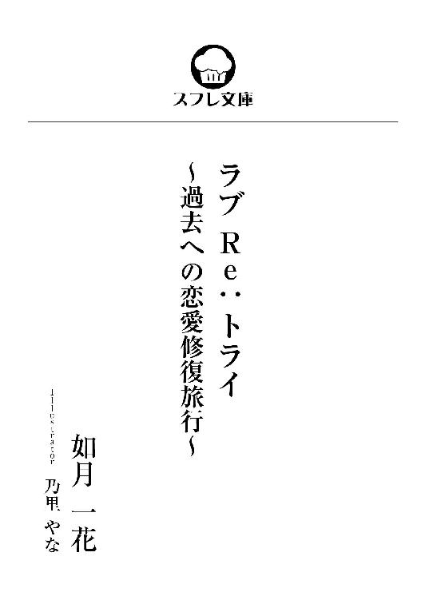
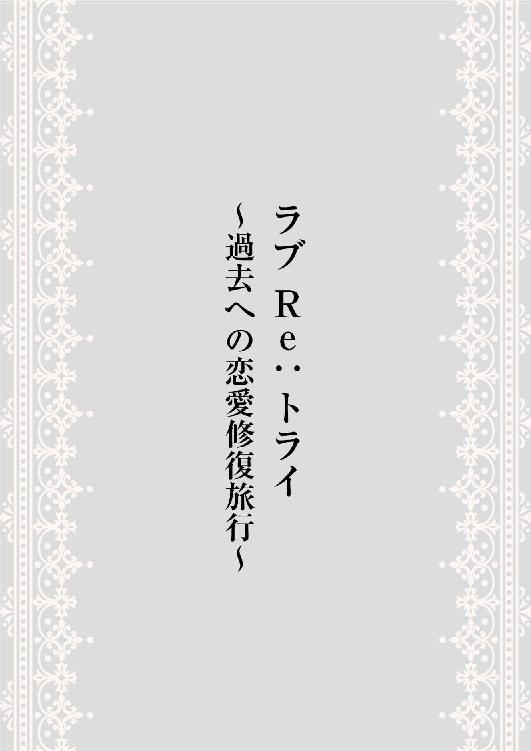

| ラブRe:トライ 過去への恋愛修復旅行 (スフレ文庫) | |
| 如月 一花 | |
| スターティアラボ株式会社 (2017) | |

本作品の全部または一部を無断で複製、転載、配信、送信したり、ホームページ上に転載することを禁止します。また、本作品の内容を無断で改変、改ざん等を行うことも禁止します。
本作品購入時にご承諾いただいた規約により、有償・無償にかかわらず本作品を第三者に譲渡することはできません。
本作品は縦書きでレイアウトされています。
また、ご覧になるリーディングシステムにより、表示の差が認められることがあります。

息が苦しい。
空気を求めてエアバッグに埋まった顔を動かそうとするものの、友恵はほとんど身動きも取れずに喘いだ。
どこか遠いところでクラクションが鳴っている。
恐らく、同棲相手である直樹の自慢のＳＵＶのクラクションだろう。
鳴り響いているのに煩いと感じることもなく、耳に単調に響くだけだ。
エアバッグが作動して顔や胸元が激しく痛んだ。
額からつーっと伝うぬるい感触は血だった。
「あ......う......」
助けて、その言葉すら出ずに隣で同じようにエアバッグに埋もれているはずの直樹を見ようと必死になる。
しかし、友恵の体はピクリとも動かない。
（こんな形でお別れ？）
別れたいなんて思うから――。
自分を責めても、痛みも血も止まらずに只、涙が溢れてきていた。
雪道じゃ、救急車だってすぐには来られないだろう。
友恵は目を閉じて薄れゆく意識の中、直樹に別れを告げた。
昼頃出た時にはまだ青空もちらちらと見える曇り空だったはずなのに、いつの間にか分厚く暗い雲に覆われ始め、ぽつぽつと降り始めた冷たい雨は肌に触れると体から熱を奪っていくようだった。
もう春も間近だというのに、シンと冷える。
箱根までせっかく来たのに、天候すら味方してくれないとは。
隣を歩く直樹を見つめながら、友恵は触れることもなくなった手をふらふらと揺らした。
手を繋がなくなったのは自分からだと思うが、それが当然となったのはいつからだろう。
友恵はいつからか直樹の大雑把な性格を許せなくなっていた。次第に恋心は冷めていき、体の関係を拒絶するようになり、手すら繋がなくなったのだった。
箱根にはこれといって見たいものがない。
ただその先にある熱海に行くと温泉があるからとちょっと寄っただけだった。
「直樹。おみやげ買う？」
「おお。そうだな」
ふたりでおみやげでも買おうか、となんとなく土産物屋に入った時だった。
若者が店主にいちゃもんをつけていた。
「おっさん。お釣り間違いだよ」
「いや、ちゃんと渡しましたよ」
丁寧に説明しているものの、若者の集団は取り囲むようにしてひとりはその様子をスマートフォンで撮影している。
しかも野次馬まで集まりだした。
「ほら、もっと言い返せよ」
ひとりが煽るように店主に言うが、レンズを向けられた状態では黙り込むしかないのか、ぐっと堪えて俯いてしまった。
「なんだアイツら」
直樹はいても立ってもいられないのか、近づくと若者のスマートフォンを取り上げた。
友恵はハッとして、逃げるように棚の隅に隠れた。
正義感が強いのは良いのだけれど、相手を見て行動して欲しいし、若者達はどう見ても十代だ。
注意してどうにかなる相手じゃない。
だが、直樹はスマートフォンを遠くへ投げると、こんこんと説教を始めたのだった。
「直樹......」
友恵の心配も知らず、若者もまともに聞いておらず、店主だけが安堵の笑みを浮かべている。
「分かったか」
「馬鹿じゃねぇの」
リーダー格の男が言うと若者は去って行った。
店主はお礼とばかりにお菓子を直樹に渡すものの、友恵は逃げ出すように店から出た。
若者達が持っていたスマートフォンは投げ捨てたが、野次馬が途中から直樹のことを撮影していた。
ネットに拡散されるのも時間の問題だ。
良い事をしているのだけれど、やり方が派手なのだ。
見て見ぬふりだって出来たはずだし、お釣りを貰った、貰ってないのいざこざなんてそこらじゅうにある。
（直樹が仲裁に入らなくても......）
直樹が友恵を見つけて店の外に出て来た。
さすがに人の目が気になるらしく、ふたりでいそいそと駐車場に戻る。
「あいつら、お客様は神様ですとでも言わせたかったのか。弱いものイビリばかり得意になる奴らが増えたな」
「直樹が止めなくても」
「見て見ぬふりなんて出来るか」
「そう、かもしれないけど。周りの人だかりが直樹のこと映してたよ？」
「そういうの、最近増えたな。気にするな。そんな映像は沢山ある」
直樹は気にすることもなく、車を見つけると運転席に乗り込んでしまった。
なんて大雑把な性格だろう。
直樹は広告代理店で働いていて世間の注目を浴びるような仕事をすることが多い。そのせいかは分からないが、直樹自身顔が出る、出ないに関わることには他の人よりも鈍感だった。
仕事で自分の名前をネット上で使うこともあるようだ。
フルネームがバレようとも、しれっと仕事をしていられるような性格でもある。
けれど友恵は、そんな直樹の鈍さや大雑把な性格が信じられなかった。
さっきの野次馬をどうとも思わないのだって、直樹らしいのだが。
友恵は助手席に乗り込むなり黙り込んでしまう。この後ふたりきりで温泉に浸かるのが憂鬱だった。
熱海に着く頃には体は冷えきっていて、ふたりはすぐに貸し切り風呂に入ろうと話した。
通された和室で適当に荷物を広げて浴衣に着替えると、貸し切り風呂に直行した。
しかし、友恵の気分は晴れない。
脱衣所で脱ぎ、ふたりで裸になるものの無言で風呂場に向かう。
友恵も直樹も黙り込んだまま体を洗い終えると、直樹がすぐに湯船に浸かる。
「ちゃんと洗った？」
「え、ああ」
（綺麗に洗ってない、絶対に汚い）
友恵は悶々としながら、湯船に浸かる。
向かい合うように入るものの、直樹の鍛えられた体躯にも何も感じない。
むしろ、なんで鍛えているのだろう？ 無駄じゃないか、という疑問すら湧く。
ふっとそんな事を考えていると、直樹が不意に友恵の胸に触れる。
「今日はいいよな」
「いや」
「なんで？」
話しながらもピンク色の突起をツンツンとこね回されるが、友恵は毅然と直樹を見つめた。
体が反応しようとも、気持ちは冷めているのだ。
「折角来たのに、嫌なのか」
「温泉に入りたいだけ」
「ふーん」
口ではそう言いながら、長い節くれだった指先は秘丘を目指す。
きっと、そこなら友恵が甘い声を出すとでも思っているのだろう。
足をぎゅっと閉じるものの、直樹はぐっと手を伸ばして指を忍ばせる。
亀裂をなぞるように撫で、そして蜜粒を捏ねようとする。
「やめて」
はっきり一言言ってから湯船を出ると、直樹は「なんでだよ」と残念そうな声をあげた。
なんでかと言われても答えられるわけがない。そもそも、直樹とは別れようという気持ちばかりが膨らんでいるのだし、直樹の行動ひとつひとつが嫌いになっているのだから。
別れましょうと言えないのは、友恵が二十七歳で三十目前なことと、なんとなく情も移り言いにくいからだ。
直樹とは付き合って四年目。
結婚の話に進むどころか気持ちは冷める一方だった。
若ければ別れていたと思う。
体の関係どころか気持ちも離れていきそうで、最近はふたりで寝ることも、エッチもほぼない。
だが、一年過ぎる毎に何故か別れづらくなっていた。
なんで同棲しているのだろうという疑問が湧く。
（そもそも、体を求めることだってこういう旅行の時しかしないくせにっ！）
友恵はさっさと脱衣所に向かうと、バスタオルで体を拭いて深いため息を吐いた。
なんだか最低な旅行だ。
一泊だから明日には帰らなくてはならない。
もしも修復出来るならと淡い期待も抱いていたものの、そもそも自分の気持ちが冷めているのだと気が付かされるばかりだった。
しんしんと降っていた雪が次第に吹雪いてきたのは、帰り道、箱根の山を走り始めてすぐだった。
ホテルを出発する時点でみぞれ交じりの雨が降り、フロントの男性に雪が降るなんて珍しいし、危ないからと注意されていたのだ。
それなのに――。
「直樹、大丈夫？」
「平気だって、友恵」
「信じられない。さっき車が滑ってたよ」
「あれはスポーツカーだから。こっちは四駆だし平気」
「チェーン巻いてないのに？」
友恵は直樹をいぶかし気に睨んだ。
そもそも、この雪が予想出来ることはなくとも、フロントの男性から危ないからと注意されたのだから、もう一泊するとか、どこかでチェーンを買うとか、そういう機転は利かないのだろうか。
大雑把過ぎるにも程がある。
「俺の運転を信じろって」
直樹は得意気に言うものの、そんな彼の言葉を信じることも出来ずにシートベルトを握りしめた。
さっきのスポーツカーは前が凹んで無残な姿になっていた。
新品のＳＵＶだから、きっと平気だと直樹は思い込んでいるのだろう。
（そういう所が大嫌い）
友恵の心がシンと冷たくなった。
雪が更に強くなり、その雪がフロントガラスを打ち付けるようになると、もはや恐怖を煽るばかりで直樹に文句も言う気力すらなくなる。
山道の途中では止まることすら出来ないのだから。
直樹もワイパーを動かしてはいるものの、視界の悪さと雪のせいでアクセルを思うようには踏めないようだった。
（早く帰りたいのに、山を越えないと高速道路に乗れないなんて）
友恵は自分から温泉旅行に誘っておいて、恨めしくなった。
もしかしたらやり直すことが出来るかもしれないと直樹を旅行に誘ってみたが、自分の気持ちがあまりにも冷めていて修復どころか離れるばかりだ。
しかも雪が降ってこようとは。
自分達の関係が天候にすら祝福されていないと思うと、もう別れを決意するしかないと思えてきて、助手席で小さくなって今日こそは別れの言葉を口にしようと決意した。
なんて言えばいいだろう、なんて言おう、そう考えるものの雪の事が頭にちらついて思うようには考えはまとまらない。
直樹も危なっかしい運転をするものだから、決意だけは固まったがぼんやり考えにふけることは不可能だった。
「ちゃんと運転してよ」
「分かってるって」
鼻歌でも歌いそうなくらい軽い口調の直樹に怒りがこみ上げてきた。
友恵の命がかかっているのに、なんでそんなに軽いのだろう。
そもそも、友恵との付き合いだって本気なのかどうか分からないと思うから、不安になってたまらないのに。
「ねえ、直樹。本当に私を好き？」
「え？ なんでそんなこと」
直樹は友恵の真剣な眼差しを感じようともせず、運転に夢中だ。
「仕事はそんなに大事？」
「なに急に。旅行も行ったろ？」
「私に好きな人が出来たら、直樹はどうする？」
「え、出来たのか？」
互いの間に沈黙が落ち、ふっと直樹が友恵の方に視線を向けた。
瞬間、車がくるんと回転した。
悲鳴にもならない声が出る中、直樹はめちゃくちゃにハンドルを切る。
鈍い音がした瞬間には、クラクションが鳴り響く中で友恵と直樹はエアバッグに顔を埋めていて、友恵は体が動かない。
痛みで意識は薄れ、光る空中を目指してすでに飛んでいた。
天国かと思う程温かく、そして、孤独も感じない。
（さよなら、直樹）
最後の最後で直樹を思い出すとはと思いつつ、だが彼の気持ちが聞けない事は悔やまれた。
そして、友恵は意識を手放した。
目を開けると、どこかで見たようなベッドで横になっていた。
けれどそこがどこだか分からないし、事故の怪我もないことに不信感を抱きつつ、そっと体を起こした。
そして、寝息が聞こえてきたことにぎょっとした。
「――拓弥？」
（なんで、元カレの部屋に？）
怖さに身震いし、体が瞬時に硬直する。
元カレの拓弥は友恵をストーカーし、刃物まで向けたことがあるのだ。
その時のことは怖くて詳しくは思い出せないが、拓弥はもう友恵の傍には近寄れないはずだ。
警察からの注意を受けているはずだし、そもそも、この拓弥は若いように見える。
おかしいと思い記憶を整理する。
あの雪山の中、直樹と共に事故を起こしたじゃないかと必死に思い起こすものの、それらしい外傷もなく、そして、着ている服も拓弥のＴシャツだ。
下着も身に着けておらず、どうやら一晩過ごしたようだがそんな記憶は全くない。
昨夜は直樹と温泉に浸かり、そのままふたりでイチャイチャすることもなく、そして帰り際に事故にあったはずだ。
本当にどういう事だろうかと困っていると、隣にいた拓弥の長いまつ毛がぴくんと動いた。
元カレとはいえ、拓弥は女性のように長いまつ毛と高い鼻梁が特徴的な綺麗な男性だった。
震え出す体を振るい立たせながら、ベッドから抜け出そうとしたときだった。
手をぎゅっと掴まれてしまった。
「どこ行くんですか？」
「あ、えっと」
彼女に対しても敬語だったことを思い出すと、段々と薄気味悪くなってくる。
それが拓弥の素敵な所だったのだが、刃物を持って敬語で脅された時は本当に怖かったのだ。
しかしその時、具体的に何を言われたかまでは思い出せない。
「ちょっと、トイレに」
「そうですか」
必死に言い訳をするものの、心臓は張り裂けそうなくらいバクバクと鳴った。
直樹との体の関係が皆無になって以来、男性に触れられることに慣れていなかった。
しかも、自分をストーカーしていた拓弥かと思うと悪い汗が背を伝う。
プラトニックな関係というと聞こえはいいけれど、友恵と直樹にはそれ以上の関係を紡ぐことが出来なかった。
その点、拓弥は割と積極的だったと思う。
それを思い出すと、反射的に逃げ出したくもなるのだけれど。
「戻ってきたら、また抱きしめてあげますから」
「いい、もういいから」
後ずさりしながらトイレに駆け込み、必死に頭の中を整理する。
鏡を見て、まずは自分が本当に相田友恵かを確認した。
バカみたいだが、夢なら違う誰かにだってなれるし、相田友恵じゃなくてもいい。
しかし鏡に映るのは確かに友恵本人で、しかも顔には傷一つない。
エアバックに顔を埋めたり、直樹の滅茶苦茶なハンドル操作で車だって壊れたりしたはずだ。
ガラスの破片で傷の一つくらいついていてもおかしくはないのに無傷で、それどころか化粧もほぼしておらず、肌はツヤツヤとしている。
本当に自分かと思うものの、多少の違和感があるが友恵自身に間違いないようだ。
ほっぺたをむぎゅっとつねると感じる痛みは確かに本物だった。
（そもそも、事故を起こしたのに怪我もなく生きているってどういうこと？ ここは一体どこ？ あれは本当に拓弥？ 直樹は？）
考えれば考えるほど、答えは浮かばずに頭を抱え込んだ。
ただ一つ分かることは、元カレの拓弥とどうやらまた付き合っているようだ、ということ。
付き合っていなければ、ベッドで眠っているということなんてないはずだ。
とはいえ、それを本当に信じていいのか分からない。
自分の体を見れば、事故があったとは思えないような、かすり傷ひとつもないのだ。
（じゃあ、あの事故が夢？）
「友恵」
「あ」
心配そうにする拓弥がドア越しに声を掛けてきた。
トイレで用を済ませているとは思われなかったのか、心配されてしまったようだ。
「ごめん。すぐに出るから」
「いいですけど。具合悪いですか？」
「ううん！ 元気元気」
扉を勢いよく開けると心配そうにする拓弥が立っていた。
「ごめん、なんか胸やけかな？」
「昨日ふたりで牡蠣鍋食べたからですかね。吐きそうですか？」
「ううん！ 違うの。違う、違うから」
必死に言い訳をしつつ、元カレに甘えるわけにもいかずに逃げようとすると抱きすくめられてしまう。
「何か考えてますか？ いつもと様子が違います」
「え......」
拓弥ってこんな人だっけと思いつつ、直樹と比べてしまった。
怖いという思いはあるのだが、どこか冷静に拓弥を観察してしまう。
事故の影響下、怖い思いをした当時の記憶が飛んでいるせいかもしれない。
逃げなくてはと思うが、体はうまく動いてくれない。
しかも直樹のことを一々思い出す。
拓弥のように友恵のことを考えてくれた事はないし、考えているのは仕事のことばかりだった。
あの旅行だって仕事最優先だと言う直樹をなんとか言いくるめて、有給を取らせたのだ。
結果的に、こんなわけのわからない事態になったけれども。
その直樹は、無事なのだろうか。
「あの、拓弥。今は冬なんでしょ？」
「はい？」
「私達、付き合って何年になる？」
「一年目です」
「一年!?」
友恵は抱きしめられながら、目をぱちぱちさせた。
それが本当なら、友恵の年齢は二十三歳になっている。
直樹とのあの旅行の時点では二十七歳だから、四年程、過去に戻ったことになる。
拓弥は音大卒だったがその経験を生かす場所が中々見つからず、フリーターをしながら食い繋ぐ日々を送っていた。
直樹とは対照的というか、その日その日ばかりで将来までは語れない人だと思う。
それでも、付き合っていた時はそれすらも魅力だったし、応援したかった。
とはいえ、刃物を向けてくるほどの異常な愛し方をされたと思うと早く逃げ出さなければと着替えを探した。
（確か拓弥の部屋に入り浸り状態だったはず）
だったら服がどこかにあるだろう。
Ｔシャツ一枚で部屋中を探しまわるものの、冬の寒さでシンと冷えてきて結局ベッドに潜り込んだ。
するとぎゅうっと抱きしめられる。
「逃げようとしてました？」
「逃げるだなんてっ」
「じゃあ、どこに行くんですか？」
「ちょっと、コンビニに」
「じゃあ、一緒に行きましょう」
「......うん」
たかがコンビニに行くくらいで一緒になんて、直樹ならあり得ない。
お金だけ渡されて、行って来いと言われて終わりだ。
ましてや、ぎゅっと何度も抱きしめられることだってない。
しかし、それが拓弥からだと思うと体が勝手に震えだす。
「あの、服はどこ？」
拓弥を押し返しながら、必死に言った。
もう一緒にいるのが辛く、顔を見るのも限界になってくる。
この優しさの下には狂暴さが隠れているのだから。
「ここに仕舞っておいたのを忘れましたか？」
クローゼットの中からニットを取り出すと、きちんとハンガーにかけられたそれを手渡してくれた。
着替えながら手渡されたスカートやタイツも履くと拓弥は嬉しそうにする。
「コンビニでおでん買いましょう」
「私、やっぱり帰るね」
「え？」
「ごめんなさい。明日、会社が忙しいから」
なんとかして逃げようと、着替えをしながら拓弥と距離を取った。
そして着替えを済ませると、バッグを手にして逃げるように部屋を出た。
拓弥は追ってくることはなかったが、スマートフォンが何度も鳴った。
代わりに『もう会えない』とメールを打ち送信する。
これ以上付き合ってはいけない相手だと分かっているし、一緒に居ても束縛されるだけの関係が続いたはずだ。
しかし、友恵が逃げようとすればするほど拓弥は追いかけてきた。
『メールで申し訳ないけれど、別れましょう』
手を震わせながら拓弥に送ると、逃がさない、そう言わんばかりにスマートフォンが鳴り、友恵は電源を切った。
「どうしてこうなの」
男運がないというか、結婚に繋がるような人に出会えたことがない。
直樹はあの事故の後にどうなっただろう。
病院にいるのだろうか。
過去に戻った自分の体はどうなっているのだろう。
体ごと消えているのかもしれない。
記憶すらも。
考えると怖くなり、友恵は肩を抱いた。
冬の寒さの中、飛び出すように逃げたものだからコートを忘れてきてしまった。
早く電車に乗り、その時住んでいたアパートに帰らないといけない。
（最悪）
思わず俯いて歩いてしまう。
もうこれ以上ないどん底に、顔も上げられなかった。
すると、ドンと肩がぶつかり友恵は反射的に謝る。
「ごめんなさい」
「いえ、こっちこそ」
その声に聞き覚えがあり、友恵は顔を上げた。
そこにはまだ少し若い直樹がいた。
「え」
スーツ姿でスマートフォンを弄っているようだった。
「なにか？」
「直樹？」
「どこかでお会いしました？ ああ、仕事関係の人、とか？」
相変わらず大雑把な考え方に呆れてしまうものの、友恵は思わず安堵した。
未来では怪我をしているだろうが、今の直樹は無事でこうして仕事をしているのだから。
「直樹、良かった」
「あの、え？」
思わず零れてしまう言葉に、首を傾げてばかりの直樹。
そこで友恵はふと気づき、笑みを見せた。
ここで出会うことがなければ、直樹と付き合うこともないのだ。
「人違いでした」
「でも、俺の名前直樹だし、泣きそうな人をほったらかしにも出来ないから」
言われて目を擦ると薄っすらと涙が指につく。
なんで泣いているのか自分でも分からない。
雪道の事故が怖かったせいもあるだろうし、拓弥なんかに再会したせいもあるかもしれない。
それでも、時間を超えてしまうなんて馬鹿げた状況に陥り不安になっていたから、直樹と出会えて少しほっとしたのだ。
嫌いだと思っていても、まだ別れるほど嫌いじゃない。
「あの、大丈夫ですか？」
心配そうに顔を覗き込まれて、友恵は無理やり笑顔を作った。
直樹は誰にでも優しかったが、こんなわけのわからない女性にすら優しいなんて。
嬉しいような、他の女性にはして欲しくないような。
「コートも着ないで、外を歩いてるんですか？ 寒いでしょ」
「あ、これは」
直樹は着ていたコートを脱ぐと友恵の肩に掛けてくれた。
出会ったばかりなのに、なんでこんなことをと友恵は目をぱちぱちさせる。
正確には、友恵だけが直樹を知っている状況なのに、どうして、だ。
「これも何かの縁かもしれませんね」
「え？」
「名前を知っていたり、コートを着ていなかったり」
「違うの、直樹っ！ いや、えっと、あの。どなたか知りませんが、私の人違いです」
必死に言い訳をするものの、名前をまた呼んでしまうと直樹は吹きだして笑った。
久しぶりに見る直樹の笑顔にどこか友恵の心がジンと温かくなる。
「寒いし、そこのカフェに入りませんか？ 俺は時田直樹と言います。あの、名前は？」
「えっと、相田友恵です」
「友恵ね」
聞き慣れた言い方にほっとしたのも束の間、いきなり名前を呼ばれてなんだかむっとする。
「苗字を呼んでくれませんか？」
「え？ 名前だめ？」
「あの、初対面ですから」
初対面であることを念押しするように言う。
けれど、直樹はしれっとした顔でまた「友恵ね、友恵」と名前を呼ぶのだ。
こりゃダメだと、友恵も呆れてしまう。
「じゃあ、コーヒーの一杯でも飲みませんか？ 寒いし」
「え、だから私、その......」
今ここで直樹との出会いを絶たねば、結局未来で別れを言わないといけない。
未来で別れを言う方がずっと大変だし、ここで直樹と出会っていなければ、もしかしたら別の男性と出会うこともあるかもしれないのだ。
だから、ここは真っ直ぐにアパートに帰らなくてはいけない。
「あの、急いでるので」
ぐっと足を踏み出すと、腕を掴まれる。
「待って、これ」
振り向いてしまうと、名刺を渡された。
「俺の連絡先。スマホに電話ください」
「ナンパ？」
直樹との出会いはそうだったろうかと思い出そうとするが、思い出せない。
そんな軽い出会い方だったろうかと首をひねっていると、ぎゅっと名刺を握らされてしまう。
「ナンパしてきたのはそっちでしょ？ 俺の名前を呼んだんだから」
「それは！ ......事故です。失礼します」
被りを振って逃げると、なぜか胸が鳴っている。
（そんなんじゃない、そんなんじゃ！）
ただ、同棲中の直樹よりも若い直樹は初々しさがあり、そして身なりも整っていた。
スーツが似合い、少しネクタイが緩んでいたところもセクシーに感じる。
悪戯な事を考えそうな瞳は漆黒に輝いていたし、髪の毛も少し短めで整えているけれど、総合的なバランスは年齢より少し年上に見え色気がある。
同棲していた未来の直樹は、部屋では冬はスウェット、夏はパンツ一枚なのだ。
楽だから、という理由でいつもそんな恰好しかしていない。
仕事に忙しくしているせいか、家ではいつもだらんとしている。
余計なことを考えてはいけないと首をぶんぶんと振るものの、直樹がこんなにも色気漂う男性だったとはと、友恵は信じられない思いになった。
（スウェットかパンツしか思い浮かばない人なのに）
深いため息を吐くと、友恵はようやくたどり着いた地下鉄の階段を下りて、アパートへと向かった。
しかし、乗換駅にたどり着くとハッとした。
当時のアパートへどの方面に向かって乗り継げばいいのか思い浮かばないのだ。
しかも、大幅な工事をしたから、昔の駅の構造を忘れてしまっている。
しばらくベンチで座り込んで悩んでいると、会社の定期があったことを思い出しそれをつてに駅員に訊くことにした。
ほっとして電車で揺られていると、今度は当時住んでいたアパートまでの道順がどこかあやふやなことを思い出す。
困って地図アプリを開くものの、アパート名が『クレイユ大和田』という名前だけで、これという住所を思い出せずに固まってしまった。
しかも、『クレイユ大和田』では何もヒットしない。
頭を抱え込んでいるうちに最寄り駅に到着すると、友恵はトボトボと歩き出して改札を抜けた。
都内の小さな駅には出口はひとつしかないが、すぐに二手に分かれている。
どっちだろうと思い悩むとふと左側にパン屋が見えた。
そのパン屋を友恵はひどくよく覚えていた。
店は古く、店主もおばあちゃんでよくおまけしてくれたのだ。
つまり、パン屋に向かって歩けばいいわけだ。
懐かしいと思いつつパン屋を素通りすると、真っ直ぐな大通りがあるだけだった。
仕方なくトボトボ歩くうちに、コインランドリーが見えてきた。
そこで友恵ははたと思い出す。
（確か、このコインランドリーで服を盗まれたことがあった！）
思い出すと、後はするすると自身のアパートまでの道が思い浮かんだ。
それから少し歩いた先の小道を入り、住宅街の中にぽつんと『クレイユ大和田』と書かれた大きな門柱が目に飛び込むと、友恵は涙が出そうになった。
確か部屋は二階の角部屋だったはずだと、鍵をバッグの中から見つけだして、鍵が開くとほっとする。
一人暮らししていた部屋はほとんど眠りに帰っていたようなものだ。
当時は拓弥の部屋に入り浸り状態だったし、帰ろうとすると抱きしめられてしまい帰れない状態が続いた。
ふとスマートフォンを弄る。
拓弥からのメールが沢山来ていて、ぞっとした。
気を紛らわす為にも誰か知り合いにでも電話したいなと思いながら、ベッドに寝転がると、結局そのままウトウトと眠ってしまった。
翌日。
アラーム音で起きると、憂鬱な気分だった。
仕事は慣れているのに、今は新人として働かないといけない。
嫌になるなと思いながら着替え、友恵は朝食を外で食べることにしてすぐに会社に向かった。
会社近くにあるチェーン店のカフェは朝からやっていたのでよく利用していた。
拓弥の部屋に入り浸り状態な生活だったせいで、冷蔵庫は食材を買っておけずに空っぽな状態だった。
当時を思い出すと、パンにしろ牛乳にしろ日持ちしないものは置いておけず、朝食は外で食べていた。
カフェに入りカウンターでコーヒーとサンドイッチを頼むとすぐに用意されて窓際のカウンター席に向かう。
外をぼーっと見ながら食べるのも、若い頃の日常だったと思う。
何も考えずに、ただ人を眺めるのだが、その日、ふっと現れた人物に友恵はぎょっとした。
直樹が窓越しに手を振っているのだ。
「え。なんで」
手を振るのでは飽き足らず、店内に入ってくると友恵の隣に来る。
「気がつかなかった？」
「直樹？ 恥ずかしいからやめて」
「あ、ほら、そうやって俺の名前を呼び慣れてるの、なんで？ やっぱりどっかで会ってない？」
言われて、またハッとしてしまう。
直樹の事を今更苗字で呼ぶのは難しい。
そもそも、時田くんとか、時田さんとか、そんな風に呼んだことがあったろうか。
考えても思い出せないでいると、直樹は嬉しそうに笑みを見せて言う。
「直樹でいいよ。また会えたのも、運命かもね」
「運命なんかじゃっ！ あり得ないからっ」
「あ、怒った顔も可愛いんじゃないの？ 隣、いいかな？」
「いい、ですけど」
努めて敬語にするものの、直樹相手に敬語は慣れず、なんて話すべきか悩んでしまう。
直樹が「コーヒーを買ってくる」と言って席を離れると、友恵はどうしたものかと悩み込んだ。
今ここではっきりと怒りを露わに迷惑だと言わないと、あの調子では連絡先を交換しようと言い出しかねない。
そもそも、なんで付き纏うのだろう。
「お待たせ。ねえ、仕事はこの辺？ 俺はこの先のビルだけど」
「そうですか」
知ってる、そう言いたいのを我慢して友恵はコーヒーを飲んだ。
この近辺では一番大きなビルで、一階にはお洒落なカフェ、二階にはハイブランドショップが入り、三階からビジネスフロアとなっている。
誰もが憧れるような会社がビルには入り、肩書きだけ見れば直樹は充分過ぎるほどの相手だ。
けれど、家での直樹を知っている以上、ここは突っぱねるしかない。
「会社は近いの？ 良かったら一緒に行こうよ」
「いえ、そういうの嫌いなので」
「あ、そう？ それよりさ、なんで俺の名前知ってるのかな？ 友恵のこと、名前どころか顔も覚えてないんだよね」
今、聞き間違いでなければ直樹は名前で友恵を呼んだ。
図々しいというか、出会い方が悪かったのか、友恵からナンパしているとでも勘違いしているのだろうか。
軽い女とは思わないで欲しい。
「苗字で呼んでください」
コーヒーを飲みながら毅然と言うものの、直樹は苦笑するばかりだ。
「え？ でもさ。友恵の方がしっくりくるんだよ。昔からの知り合い、というか。不思議な出会いだろ？」
友恵は直樹の言い分に呆れてしまった。
昔からの知り合いという意味では、全くの間違いではない。
未来において、同棲をする程の仲なのだから時間を超えて親近感が湧いたのかもしれない。
ちょっと煩わしいような気もするが、直樹の言う運命という言葉がいやに耳に残る。
「そんな出会いを信じるんですか？」
「信じてみようなかと」
「なんか、相変わらず」
「え？ 相変わらず？ やっぱり、どこかで会ってるのか？」
「会ってません。時田さんに似た人がいて、その人も同じような事ばかりだから。似た者同士なんだなって」
「それって、彼氏？」
思わぬ言葉に友恵のサンドイッチを食べる手が止まった。
今、こうして他愛ない話を進めるだけでも、過去の直樹に余計な期待を持たせている。
つまり、運命だとか彼氏だとか、そんな言葉が出てくる時点で直樹が友恵を気に掛けているらしいことくらいは察するべきだった。
「私、仕事に行きます」
飲みかけのコーヒーをトレイに載せ、返却口に向かうと直樹も付いてくる。
しまったと思いつつ、何を言えばいいのか分からない。
店を出ると直樹はちゃっかり隣に並んで歩いた。
早く言わないと、未来の自分はもっと困る。
「時田さん。あの、私......」
「それ以上は言わないで欲しいな。嫌いなんでしょ、こういうの」
耳元で囁かれて、友恵は耳朶を染めた。
直樹がこんなに甘く囁くなんて、あっただろうか。
記憶が混乱しているせいなのか、思い出せない。
なんとか逃げ出そうと離れようとするとぐっと腕を掴まれた。
「離して。自分のやってること、強引過ぎだと思わない？」
「思う。でも、捕まえなきゃ一生会えない気がする」
ぐいっと腕を掴まれるとそのまま路地裏に連れて行かれた。
「ちょっと、私、そういうつもりないからっ」
「俺は、気になる人を手放すつもりはない」
壁に押し付けられると、キスをされる。
背中にはひんやりとしたコンクリートの冷たさが伝わり、同時に直樹の熱も唇から伝わってくる。
（こんな強引なことが出来たっけ？）
頭が混乱していても、やまないキスに友恵は自ら首を振って直樹を押し返した。
「何するのっ！」
本当なら平手で一発食らわせたいところだが、なぜか出来ない。
それどころか、体の芯がジンと疼いている。
「俺、友恵ともっと深い仲になりたい」
「出会ったばかりだし。そもそも私の好みじゃないし、直樹はぐーたらだし、仕事ばかりだし、最低だし」
言った後でハッとした。
今の自分が知るはずのない情報をバンバン言ってしまった。
しまったと直樹を見れば、好奇心で目を輝かせている。
「前世で結ばれた仲？ 俺達」
「違う！ もう離れてください！」
ドンと押し返して直樹から逃げ出すものの、胸は高鳴り唇には温もりが残っていた。
朝から災難に遭ったと、友恵はオフィスでぐったりしていた。
友恵は大手デパートの総務部に勤務している。
新人だった頃は先輩からのファッションチェックが厳しくて仕事どころではなかった。
ファッション雑誌を買い込み、無難なＯＬを装えるようになったのは配属から半年程度経ってからだ。
ブラウスにフレアスカート。
色も目立たない色に徹して、流行りを追わず。
一方、未来の友恵は流行りの恰好をして勤務をしている。
この時にいたお局が辞めてかなり自由になったからだ。
つまり、過去に戻ったということはそのお局が復活している、ということになる。
「あ、おはよう。今日は遅いんじゃない？」
「すみません。すぐにお茶の用意をします」
「そうしてくれる？ あ、その服、凄いあなたに似合ってる。私には似合わないけど可愛いわね」
お局が遠回しに言う『地味』というフレーズに、腹が立つ。
しかし、ここで言い返してはいけない。
必死に笑顔を作り、太り気味のお局には似合わない花柄のスカートを褒めることにする。
「先輩、スカート素敵です。私なんて綺麗な柄物は履き慣れないから」
「そう？」
「はい！」
「そうよねえ」
嬉しそうにしながら友恵に資料をどっさりと渡すと、「よろしく」とだけ言って去って行った。
どすんと資料を机に置くと、友恵は過去に戻ってしまったことが恨めしくなる。
このお局が退職するのはまだ一年以上も先のことだ。
この一年を耐え、更には直樹の猛烈アタックをかわしながらの生活など面倒で仕方がない。
そもそも、友恵の記憶には直樹からの猛烈アタックなどなかった。
忘れているのかもしれないが、友恵が過去にトリップしたせいで直樹との出会い方が変わったのかもしれない。
けれど、本来直樹とどうやって出会ったのかを思い出そうとしても、もやがかかったようで思い出すことが出来ないのだ。
資料に目を通しながら、友恵は会議の資料を作っていった。
どっさり渡された資料はそれだけではない。
デパートの今後の催し物を決めるための企画案や付随資料、それに伴う経費、営業部からの報告書など、諸々とまとめあげて経理に報告しないといけない。
新人だった頃は夜遅くまで資料を作り、営業部からの報告書をまとめていた。
しかし、今の友恵の中身は新人ではない。
催し物で企画案に必要な書類を作り、経理に通しておきたい資料を作りあげることから始めると、すぐに経理部に足を運んだ。
「すみません。次の企画案の経費なんですけど」
友恵が臆することなく言うと、経理の川内は目を見開いて驚いた。
川内はベテランの男性社員で当時の友恵の相談相手でもある。
「いつもと違うね。良いことあったのかな？」
「い、いえ。すみません、失礼します」
川内にはバレそうだと、さっさと退散してデスクに向かう。
どっさりとある資料を端から片付けていくと、あっという間にお昼になった。
「お昼、いってきまーす！」
いつものノリで言ってしまうと、お局がぴくりと眉をあげて不機嫌そうにした。
こうした単独行動を酷く嫌う人だったと思い出し、一礼して逃げ出すようにフロアを飛び出す。
自分が新人のように振舞うというのはもう難しい。
そもそも、新人時代なんて暗黒のような時代だ。
忘れてしまいたいことばかりなのに、思い出して振舞えなんて。
深いため息を吐いてから顔を上げると、直樹が遠くから手を振っている。
「な、直樹っ！」
「友恵ー！」
「嘘、なんで。昼まで一緒なんて信じられない」
くるりとターンして逆方向に歩いて行くと、とんとんと肩を叩かれてしまう。
「今からメシ？」
「ううん。もう終わり」
「でも、そこのビルから出て来なかったか？」
「勝手に見ないで」
「厳しいなあ。偶然見ただけだろ？ それとも、こういう運命的な出会いをして戸惑っているとか？」
「運命!? いい加減にして」
とっとと逃げようと直樹から離れようとすると、つかつかと後ろから付いてくる。
「そこの定食屋うまいんだ。奢るから一緒に入らないか？」
「結構です」
言った途端、お腹が鳴った。
猛烈に仕事をしたせいだろう。
「サバ味噌とか牛タン定食がお勧めかな」
直樹がさらに追い打ちをかけるように言うものだから、さらにお腹は鳴る。
「......行く」
小さな声で返事をすると、直樹は嬉しそうに横に並んで歩いた。
（定食屋が美味しそうだから行くだけで、直樹と一緒に行動したいわけじゃない）
「直樹、勘違いしないで」
「あ、また名前。俺達って前世で結婚してたのかな？」
クスリと笑いながら言う直樹に、友恵はもはや何も言えなかった。
前世どころか、このまま付き合いが進めば同棲がスタートするのだ。
順調なら結婚だってするかもしれない。
（でも、それが難しいから......。）
頭の中にクラクションが響き、動かない直樹の姿が甦ると寒気がする。
自分の肩を抱くと隣にいる若い直樹に心配そうに覗き込まれてしまう。
「どうかした？」
「ううん。これで最後だからね」
「友恵とは最後なんてないと思うな」
友恵は直樹からの甘い言葉に、一瞬戸惑ってしまった。
その言葉をどう受け止めていいのか分からない。
未来の直樹がもしも言っていたら、やりきれない。
「いつか終わりはくるものだから」
友恵は直樹との別れを意識していたことを思い出しながら、定食屋へと向かった。
直樹はキョトンとして分からない様子だったけれど、自分だけには分かることだった。
翌日、その翌日も、直樹と昼ごはんを一緒に食べた。
直樹が待ち伏せしていたのかと思い聞いてみたが、直樹も仕事に追われているのは分かっていたし、待ち伏せするような計画的な人間でもないことに気が付く。
友恵が時間をずらして昼ごはんを食べに出れば直樹がいた。
別に行動したいのだが、何かと美味しそうな店を言われて何となく断ることも出来ずに一緒に食べてしまった。
直樹がこんなにも一緒に居たいと言ってくれることがあったろうかと、友恵は思い出そうとしてみるもののやはり事故を起こしたことしか思い出せない。
反対に、そこまで直樹は自分をほったらかしだったろうかとも考えるが、事故や時間を超えてきた後遺症のようなものだろうと、直樹の猛烈アタックの原因は曖昧にしておいた。
そして、週末の日曜日。
今度こそは直樹と会うはずがないと出かけた先は、映画館だった。
直樹は仕事かもしれないし、休みだとしても疲れて寝ていることも多い。
こんなところでばったり、なんてことはないと映画館に入ろうとしたときだった。
「え。友恵？」
その低音の声にぎょっとした。
「なお、き？」
見上げると、同じく驚いた表情をする直樹がいた。
「本当に、前世とか運命とか信じたくなってきた。偶然有給取った時に。映画、一緒に観よう」
「ひとりで観たいから」
「まあまあ。この映画、カップルにはお勧めらしいよ」
「私達、付き合ってないし」
「まあまあ」
直樹は勝手にチケットを二枚買ってしまうと、友恵の手を引いて歩きだした。
「ひとりでマニアックな映画観るより、ふたりで恋愛もの観た方がいいだろ？ その後、レストランで食事してさ」
直樹は強引に予定を立ててくる。
席に着くと直樹とはぴたりと肩をくっつける状態になった。
嫌でも胸は鳴り、逃げられない状態は余計に緊張させられる。
そして始まるのは大人同士の恋愛映画だ。
この映画は濃厚なラブシーンが話題だったはず。
考えているうちに、冒頭からふたりの濃密なキスからのセックスシーンへと切り替わった。
（直樹、何考えてるの）
ひじ掛けに置いていた手を引っ込めようとすると、直樹がぎゅっと手を握ってきた。
「こういうの、嫌いだった？」
「別に、慣れてるから」
「そう？ 俺達も、付き合ってみない？」
「私と直樹......時田さんは合わないから......」
冷たく言い放った瞬間、女優の官能的な喘ぎ声が響いた。
同時に直樹からぐっと力を込めて引っ張られると、強引に体が引き寄せられる。
体が軽く浮くと直樹から覆いかぶさるような形でキスをされた。
「やっ」
直樹とは初めてのことでもない。
けれど、久しぶりに感じる唇への温もりに慣れずに強引に立ち上がり暗闇から抜け出してホールに出る。パンフレットやチケットが売られていたカウンターを走り抜けようとしたとき、直樹も追ってきて腕を引かれた。
「なにするの!?」
「好きだから。友恵、可愛いしモテそうだし」
「だからってキスしていいわけ、な......、やっ！」
強引に映画館の外に引っ張り出され、ビルの壁に押し付けられる。
直樹の後ろには人の波が溢れている。
まだスマートフォンの最盛期でもなかったため、歩きスマホの人達も少なくチラチラと見る人もいた。
「私は、時田さんをなんとも思ってないから」
努めて時田さんと言ったが、直樹は耳朶にそっと囁くように顔を近づける。
「好きだって言わせてみせるから」
「どうして、今なの」
「今？」
「なんでもない。とにかく、どいて」
直樹を押し返そうとすると強引に顎を押し上げられ、キスの続きをされてしまう。
口腔に舌先が割入ると、友恵も拒絶する手が止まってしまう。
こんなことをされた覚えもないし、直樹とキスなんて一か月はしていない。
セックスに至っては、半年以上はしていなかった。
「んっふあ」
「可愛い声出して。この続き、してもいい？」
「だ、め」
必死に抵抗するものの、相手が直樹だと思うと体を許してしまいそうになる。
そもそも、セックスレスの解消は大きな課題だったのだ。
久しぶりのキスだけでも蕩けてしまうほどの甘美な誘惑だ。
口腔を丁寧に舐められてしまうと、甘い息が漏れる。
押し返そうとしていたのに、受け入れるかのように下肢がジンと疼いてしまう。
「近くにホテルあるんだけど」
「......だめ。そんなこと。私達、まだ」
「今日から付き合うならいいだろ？」
また耳元で囁かれて、友恵は耳朶を染めた。
こんなに甘く囁かれたことなんてあったろうか。
どうやって逃げればいいだろう。
分からないまま、キスは続き次第に互いの唾液が絡み合う程の長いキスになる。
直樹は友恵が頷くまでキスをやめないらしい。
「足。がくがくしてないか？」
「して......ないから。んっ」
「ここで、少し触れてもいい？」
「やっ！」
やっと我に返ると、友恵は直樹を押し返した。
けれど、直樹はまだ熱が冷めていないようでぐいっと手を握り歩き始める。
「こんな顔みせられて、我慢なんて無理だろ。俺、本気だから」
「本気って、私は......」
未来では、もう終わりを迎えそうなカップルなのだ、と言いたいのを我慢した。
こんなに情熱的に求めてくるのは、直樹だけれど違う直樹だからだろう。
そもそも、運命だとか前世だとか、友恵との偶然との出会いをすごく嬉しそうにしていた。
きっと、そんな出会いが直樹を突き動かしているのだろう。
人混みを抜けてしまうと、路地裏に入った。
すぐにホテル街になり、華美な装飾が施されたラブホテルに連れて行かれる。
友恵だって全力で拒絶したい。
それなのに、直樹から甘く求められることがどこか嬉しく、期待してしまう。
未来では拒絶していたのに、甘い言葉と共に友恵自身を求められていると感じると、抵抗することが出来なかった。
いくら未来で辛い現実が待っていようとも。
すぐに部屋に入ると、直樹は友恵を広いベッドまで抱き上げた。
そして降ろすなり、自身は着ていた服を全て脱いでしまう。
「ま、待って。私、そんなつもり、ないから」
「本気でないなら、きちんと嫌がるだろ。期待していた、そういう風に見えたけど」
「ち、がう」
直樹にそのまま組み敷かれてしまうと、ベッドが沈んだ。
そしてゆっくりとブラウスのボタンが外される。
露わになる柔らかい丘を見て、直樹は嬉しそうに目を細めた。
「綺麗な胸だな」
「嘘言わないで」
「嘘なんて言えない」
そのままゆっくりとブラジャーをずりあげられると、友恵は胸を隠した。
けれど直樹からゆっくりとキスを落とされると力が抜けてしまう。
「可愛い」
「そんな、こと、直樹思ってない、でしょ？」
耳朶を染め上げ、頬も真っ赤にしながら訊くとどこか意地悪な笑みを浮かべながら直樹は「本気だけど？」と口角を上げた。
ドクンと胸が跳ねると、直樹は更に言う。
「ここ、もうピンって尖ってるけど。友恵もしたかったんだろ？」
「これは、その......」
「遊びじゃない。友恵が好きだ。きちんとこれから付き合う」
直樹は言うと、ピンク色の突起を丁寧に舐める。
それだけも甘い痺れで蕩けてしまいそうだ。
「ひゃっあうう」
「感じやすい？」
「ち......がっ」
体に力も入らず、直樹を朦朧と見つめると乳房は丁寧にもみほぐされていく。
「友恵、気持ちいい？ 足りない？」
「足りないわけ、なっ」
「もっと欲しい？」
「もう、そういうの、やめて......」
乳房を弄られ、突起を責められながら言葉でも翻弄されると、友恵の下肢からとろりと蜜が溢れてきた。
それを感じると、いやいやと首を振ってなんとか逃げたい気持ちになる。
足りないとかもっととか、そんなことを言えるわけがない。
しかし、直樹は嬉しそうに続け、スカートを捲りあげた。
下着を剥ぎ取ると、秘丘を撫で亀裂に指を這わせる。
「ひんっんっああ」
「こっちの方がいいかな？」
涙目で違うと訴えるものの、直樹の指先は亀裂を往復するだけでなく蜜粒を捏ねまわしだす。
「や、めて？ 私達、続かないんだから」
「これっきりってこと？」
「......そう」
少し意味は違うが、未来の自分達には先がないのだ。
つまり、ここで快楽に溺れても、同棲をしたとしても、その先の未来は保証されていない。
こんなことをしている暇はないはずなのに。
直樹の熱を感じ、指先で翻弄されると友恵はそれ以上の否定の言葉が言えない。
もしも、やり直しが出来るのなら？
と考えだしてしまうからだ。
けれど、直樹の悪い所も知っている。
友恵が思わずそんなことを考えていると、指が蜜壺に侵入してきた。
「んっああっ」
くちゅっと音を立てて掻き混ぜられると、直樹は友恵の足を広げた。
「やっああ。恥ずかしい、から」
「友恵、可愛いから。全部見たくなる」
「あっんっ、そんなの、嘘」
「どうしてそう思う？ 俺、そんなに嘘ついたっけ？ それとも、友恵は酷い失恋でもした？ それなら、俺がその傷を癒すけど」
激しく掻き混ぜられると腰が浮いて、体が芯から直樹を求めていた。
優しい言葉と下肢にもたらされる刺激は、友恵の理性を吹き飛ばしてしまった。
直樹はこんな風に甘く抱きしめないと思っていた。
前戯に時間をかけることもなかったし、可愛いと言いながら愛撫されることもなかった。
「直樹ぃ......」
蕩けてしまいそうな頭で名前を呼んでいた。
「とろとろの蜜が溢れて止まらないよ、友恵」
「だって、私......」
直樹からこんな風に愛されたいと、心の奥では願っていた。
けれどそんなことを自分から言いだすのは恥ずかしいことだし、嫌われてしまうと思い言えなかった。
嫌われたくないという思いとは裏腹に、直樹はセックスの手を抜いていったし、友恵は演技をするようになっていた。
次第にそれすら疲れてしまった頃、ふたりのあいだには溝が出来ていた。
自分だって手抜きだと言われればそれまでだが、直樹からの愛情を体で感じたいと伝える勇気は、友恵にはなかったのだ。
卑猥な水音は友恵の下肢を濡らす程になるが、直樹は掻き混ぜたり蜜粒を転がしてきたりと、挿入へ急ぐことはない。
早く挿入して欲しいと友恵の方が腰を揺らしてしまう程だ。
「もう、お願い。やめ、て......」
「欲しいって意味？」
友恵はこくりと頷いた。
あまりの恥ずかしさに顔を背けてしまう程だ。
直樹相手に自分から強請るような事をしたのだから。
すると直樹は男根にコンドームを丁寧に付け、そっと友恵にあてがうとゆっくりと挿入した。
「んっあああっ！」
久しぶりの悦楽に友恵は大きく喘いだ。
この時間では拓弥から散々愛された体だが、未来から来た友恵にとっては久しぶりの快楽を思い出させられ、涙を滲ませる。
「ごめ。痛い？」
「ん、大丈夫」
未来の直樹とはセックスレスだとは言えない。
「じゃあ、ゆっくり動くから。初めてだった？」
友恵はゆっくりと首を横に振った。
直樹は大雑把な性格だが、誰かを傷つけるような事はしない。
ここで初めてだと言ったら行為そのものが終わるだろう。
「絞まるな、友恵の中。気持ちイイ」
「あ、嘘、直樹、ほんと？」
「ああ。凄い良い。動いたらダメ？」
熱っぽい視線を受けながら、直樹は友恵におねだりをする。
ふっとそんな直樹が愛おしく思えてしまう。
未来の直樹はそんな確認をしなかった。
「ん。少しだけ」
「可愛いな、ほんと。友恵、離したくない」
ゆっくりと抜き差しをしながらそんな事を言われてしまうと、心まで直樹を求めてしまう。友恵はもはや快楽にゆだねて直樹の首に腕を回していた。
未来のふたりはこんな愛のあるセックスをしていただろうか？
お互いに欲求を満たすだけのセックスが嫌で、友恵から逃げたのだ。
抽送はゆっくりで隘路はじわじわと広がりながらも、奥深くに男根が入り込む。
その快感に、友恵はシーツをぎゅっと掴みながら直樹をうっとりと眺めていた。
「あっあっ、直樹、これでおしまい、だからね」
「一回とか言うなよ。付き合おう」
「だ、め......。あっあっあっ」
猛りが最奥に到達した途端、友恵は堪え切れずに卑猥に喘いだ。
腰も揺れ、体中が直樹を欲している。
「だめっ、だめっ」
快楽への頂きに昇り始めるのを感じると、必死にその言葉を放った。
しかし直樹はずんずんと最奥を刺激し激しく突き始めた。
力が抜け、代わりに直樹に抱えられると熱が伝わり体中で鋭敏に反応する。
「なお、きっ」
「いいだろ？」
ずんっと突かれると、背からゾクゾクと快楽が走り、蕩けてしまう。
もうダメだと息を荒げてしがみつくと、直樹が友恵にキスをした。
口腔を舐められて、友恵の意識は遠のきそうになる。
「んっんっはあ」
「俺、もう、だめ。友恵との体の相性もいい」
言われると、きゅっと膣が絞まる。
猛った男根が爆発しそうな程に熱を帯び、直樹がせわしなく腰を使った。
そして、キスもままならない状況になると、直樹は友恵の手を握ってきた。
「好きだ、好きだ」
その言葉を聞きながら、直樹は友恵の中で白い白濁を飛沫させた。
「あっあふあっあ」
溢れ出る熱を受け、友恵も果ててしまう。
互いに抱き合い、しばらく動けないままゴロンとベッドに寝そべった。
息を荒げながら、隣で直樹が言った。
「本気で、付き合ってくれ」
「だめ。私達、付き合っても上手くいかないから」
ぐったりした体を起こすと、剥ぎ取られた衣服を拾い集める。
「なんで？ そりゃ、俺のやり方は悪いかもしれないしちょっと強引だったけど。それは友恵と早く一緒になりたくて。......悪い」
「そういうところは、変わらないね」
「どういう意味だ？」
首を傾げる直樹をよそに、友恵は着替えを始めた。
汗で濡れている体は直樹との熱を思い出させられ、余計に早く離れないといけないと慌てて着替えを済ます。
勢いに任せて、甘い言葉に浮かされて、そんな理由でセックスしてしまうなんて。
直樹をまだ好きかもしれないけれど、将来は別れが待っているのだから今の快楽に溺れてはいけない。
ボタンを全て留めると友恵はバッグを持って部屋を飛び出した。
「ごめん！ 傷つけるつもりはなかった！ また会おう」
後ろから直樹に言われるものの、友恵は何の返事も出来なかった。
過去の直樹は、友恵に満足しているように見える。
しかし、未来の直樹は仕事に生きがいを見つけ、友恵のことなんて考えていない。
セックスは直樹の気分次第で始まり愛撫だって適当だ。
過去と未来との誤差が友恵を混乱させた。
ラブホテルを逃げるように後にしながら、友恵は下肢に残るジンとした疼きに戸惑いを覚えていた。
あのまま部屋にいたら、直樹に何度も果てさせられて体からの関係も良いと思えるような、蕩けるような時間を過ごしたろう。
だが、それは絶対にダメだ。
人混みを縫うように、友恵は駅への道を急いだ。
電車に揺られ、部屋に戻るとベッドにダイブする。
そして思い出す直樹との甘い時間に改めて頬を紅潮させた。
シャワーを浴びようと浴室に向かい裸になると、さっきまで直樹が嬉しそうに舐めていた乳房を見てしまう。
可愛い、そればかり言って友恵を翻弄してきた。
早く忘れようと、思い切りシャワーを浴びて熱を冷ますが全身に残る直樹からの熱を追い出すには、しばらく時間がかかった。
浴び終えてベッドの上でうずくまると、結局直樹のことを考えていた。
今ここで付き合うのはきっと簡単だろう。
直樹の勤める会社は知っているし、職場も近いせいでよく会う。
休日ですら会うのだから、また会うかもしれない。
そこで今日のことを謝り、付き合って欲しいと言えばきっとすんなりお付き合いが始まるだろう。
けれど――。
（未来の私達は冷めきっているのに）
今日の熱っぽい視線と吐息や言葉を思い出すものの、それはこの時間の直樹であり、未来の直樹ではない。
今でも仕事は忙しいはずだし、将来はもっと忙しくなる。
ここではっきりと、あの時は何となくだと、ばったり会っても突っぱねることが出来れば、未来の自分が別れるために旅行することも、そしてそのせいで事故に合うこともないだろう。
しかし、脳裏に直樹の熱っぽい視線と快楽が浮かんでくるとジンと下肢がまた疼く。
「直樹。......本当はこんなに優しいなら、もっと優しくしてよ」
思わず呟いてしまう。
未来の直樹と過去の直樹を比べても仕方がない。
しかも、友恵が現れたことで少しのズレがあるようにも感じる。
そのせいで直樹も変わったのかもしれない、直樹とやり直しが出来るのではと考えてしまう。
頭の中でぐるぐると考えを巡らせるも答えは出ずに、友恵はごろんと横になった。
そして枕をクッション替わりに抱いていると、そのまま目を閉じて眠ってしまった。
翌日。
やはり直樹と付き合ってはいけないと決意して早めに家を出た。
会社近くのカフェで朝食を取ろうと店内に入ると、直樹がカウンターで店員と話していた。
その偶然過ぎる出会いに、友恵は思わず逃げたくなりそっと店から出ようとしたが、すぐに直樹に気付かれてしまった。
顔を引きつらせながら返事をすると、直樹はコーヒーを手に持ちながら友恵の傍に寄ってくる。
「おはよう。昨日はごめん。好きだからって強引過ぎだったな。でも、友恵もまんざらじゃないというか、その......気持ちよかったみたいだし」
「直樹っ！」
ぐいっと手を引いて店の端の席まで連れて行き座らせると、きっと睨む。
「まだ、名前で呼んでくれるんだ。ていうか、呼び慣れてるよな」
「気のせいだから。偶然。それより昨日のことだけど、忘れて欲しいの」
「え。なんで？」
不安そうに見つめる直樹に友恵の胸が痛んだ。
一度だけの都合が良い関係なんて、直樹は慣れないだろう。
勿論、友恵だって慣れない。
「体からの関係なんて、私、無理だから」
「でも、その前にも会ってるから、なんていうか。その......友恵が欲しくて」
また始まる甘い言葉に友恵はトクンと胸を鳴らした。
けれどここで引いてはいけないと、直樹を毅然と見つめる。
「私、直樹は......時田さんは無理なの」
「俺、そこまで悪いことした？」
「ごめんなさい、仕事があるので」
努めて突き放すように言うと、友恵は直樹から逃げるように店を出た。
直樹もきついことを言われたせいか、追ってくることはない。
あれだけいえば、鈍い直樹だって分かったはずだ。
だが、友恵の心はぽかんと穴が空いたようだった。
今後、二度と友恵の前に直樹は現れない。
それはつまり、これから付き合うことはなくましてや一緒に住むことなんてあり得ないということなのだ。
考えたら、目に涙が溢れそうになっていた。
まだ言えなかった別れの言葉を、何もしらない過去の直樹に言い放った。
伝えたのは友恵自身なのに、一方では直樹に甘く迫られることに嬉しさを感じる自分もいた。
その気持ちに従うことだって、間違いではなかったのかもしれない。
もしかしたら、未来は変わるかもしれない。
（そんなわけ、ない。直樹は仕事に一途だし、今はかっこよく見えても部屋じゃぐうたら）
知ってるんだから、と自分に言い聞かせてみるもののそのぐうたら直樹がもしも時折甘く囁いてくれたら？ とまた自問してしまう。
そういう未来があったら、やり直しが出来ないかと。
このまま時間をやり直し、もう一度直樹と共に過ごすことも――。
揺れそうな気持ちをぐっと堪え、友恵は違うカフェに入り直した。
カフェでサンドイッチとカフェラテを頼み窓際の席に座ると、自然と外を見ていた。
ダメだとサンドイッチにかぶりついたものの、直樹を失った喪失感は拭えなかった。
＊ ＊ ＊
あれから直樹とは会わなくなった。
もう二週間になる。
もしかしたら直樹は友恵を見つけているのかもしれないが、だとすれば意図的に会わずにいてくれているのだろう。
友恵は総務部ではちょっとした有名人になっていた。
新人なのに仕事が出来ると、係長から褒められたのだ。
あのお局からも「無難なファッションだけどいいわね」と言わしめた。
直樹に別れの言葉を放った日、総務部はちょっとしたトラブルに見舞われていた。
営業部からの報告書が遅れていたのだ。
総務部で遅れは困るのだが、月末になれば仕方がないことだと皆割り切っていた。
だが、友恵だけはやる気を見せた。
「ちょっと営業部まで行って、資料だけでも貰ってきます」
「いや、君が行っても無駄だろう？」
係長はそう決めつけたが、友恵は気にせずに営業部に向かい資料を受け取ると猛然と報告書をまとめた。
見ていた誰もが友恵の行動力に驚き、係長は嬉しそうにする。
「月末は忙しい、の一点張りだからな、彼ら」
「私達だって忙しいんです。それが通用するなら、どこだってその一言で通してます」
「なんか、変わった？」
係長が首を傾げたが、友恵はそれには答えず席に着いてパソコンに向かった。
仕事は事なきを得、その翌日、友恵は無地の紺スカートではなく黒のロングタイトスカートを履いた。
未来の自分には年相応な恰好だが、過去の自分には少し不釣り合いかもしれない。
けれど、お局の顔色を伺いながらいつもフレアスカートを履くのは疲れたのだ。
お局がすぐに食いつき、ふーんと品定めするかのように上から下まで眺めてくる。
「似合ってるんじゃない」
「え......ありがとうございます」
思わぬ言葉に、友恵の方が動揺する。
怒られるのは覚悟していた。
無地のフレアスカートが鉄板の総務部でタイトスカートなど浮いていることこの上ない。
だが、お局は目新しいものでも見るかのように、「ふーん」と連呼していた。
「まあ、お洒落なら私の方が上だけど」
捨て台詞のように言い残すと、自分の席に戻っていく。
昨日の係長とのやり取りを見て自分が蚊帳の外だったのが気に食わなかったのだろう。
服に文句のひとつでも言ってやろうと思った矢先に、友恵がファッションを変えてきて何も言えなくなったらしい。
嬉しくなって席に座りふとバッグを開けると、小さなキャラクターの白いウサギのキーホルダーが入っていることに気が付いた。
子供から大人まで人気があって、どこにでも売っているものだ。勿論友恵もそのキャラクターを知っている。
けれど特別好きだったろうかと首をひねる。
キーホルダーを見れば『島根』と地名の札がついていた。
過去の友恵が旅行の記念にと買ったのだろうか。
「誰の、だろ。私？」
そもそも、バッグの中身を丹念に整理するほどの余裕もなく過ごしていたから、過去に来て自分のバッグに目を向けることはなかった。
どうせ、財布と化粧ポーチ、手帳にティッシュに髪留め程度しか入っていないだろうし、毎日取り換えるハンカチくらいしか見ていなかったのだ。
その小さなキーホルダーを見つめてみたが、何も思い出せない。
気にかかりはしたもののバッグに突っ込んだ。
係長から呼ばれ資料作成を任されると、すぐに友恵はデスクに戻る。
この頃の友恵なら、資料作成ひとつにすらどんよりと落ち込み、一日かけていたと思う。
だが、係長からもらった資料を目にして半日で終わるなと算段を付けると、すぐにパソコンに向かった。
隣に座る同僚が「友恵、なんかいつもと違う」と不安気に言った。
思えば、隣に座る同僚もその隣に座る同僚も、当時つき合っていた彼と結婚して寿退社したので未来のこの職場にはいない。
この時既に、友恵と違って結婚というレールの上を走っていると思うとやるせない。
「このくらい出来ないと、後が大変だから」
友恵は精一杯見栄を張り、ふたりに笑顔を作った。
過去の友恵は、拓弥にどっぷり浸かり、仕事に必死にならざるを得ない状況が来るとは思っていないのだ。
しっぺ返しのように、拓弥と別れた後は仕事の日々だったことが思い出された。
「ねえ、友恵。この前言った出雲大社のお守りの効果はどう？」
「え？」
「え？ じゃなくて。恋愛成就のお守り買ったでしょう？ 彼氏とうまくいきますようにって」
「あ、うん」
どこだろうと再びバッグを漁ると、内ポケットに大事に仕舞ってあった。
島根のキーホルダーも、恐らくここで買ったのだろう。
それにしても、わざわざ出雲大社に行ったはずなのに友恵の思い出は曖昧にしか残っていない。
「平成の大遷宮っていう滅多にない年だからって、行こうってなったでしょう？ ご利益ありそうだし」
「そうだった！」
友恵はようやく思い出した。色々あり過ぎて混乱し、ましてや過去の事で忘れていた。隣で話す同僚は訝しげな目を向けてくるばかりだ。
それから逃げようと、友恵はトイレに行くと言って席を離れた。
そんな大層な所で恋愛成就のお守りを買ったというのに、拓弥とは結ばれることはなかったのかと、トイレの個室でぐったりと落ち込んでしまった。
翌朝、玄関の方が騒がしく感じた。
起きて着替えると、なんとなく玄関に向かう。
すると、ドア越しに人の気配を感じた。誰かいる。
「友恵。会社で活躍してるみたいですね。それから、あの男は振って正解です」
その声にぎょっとした。
拓弥だ。
逃げるように離れたあの日、完全に別れを告げたつもりでいたけれど、拓弥にそのつもりはなかったようだ。
「友恵、好きでもない男と寝るのはよくありません。こっちは黙って聞くしか出来ないのですから」
その言葉で、背筋が凍った。
どうして知っているのだろう。
聞くとはどういう意味だろうか。
何も言えずに立ち尽くすと、拓弥は更に続ける。
「中に入れてくれませんか」
その声を聞いただけで胃液がこみ上げてくるし、足はがくがくと震える。
「警察......」
「なにを言うのです？ 彼氏に向かって」
友恵はスマートフォンの置いてあるベッドまで這うように逃げ、警察に電話をした。
コールするとすぐに出る。
「あの、元カレが、あの！ 助けてっ！」
拓弥の異常な愛情やストーカー行為を思い出し、震えが止まらない。
せっかく順調に滑り出した日々だったのに、どうして何もかも上手くいかなくなるのだろう。
がくがくと体中が震える中、扉がガンと蹴られた。
「友恵！」
扉を見て、慌ててチェーンを掛ける。
そして警察に必死に訴えた。
「ストーカー行為を受けてます！ 元カレから。アパートに来てるんです」
電話越しの警察は淡々と対応し、すぐに向かうと言ってくれた。
「警察を、呼んだから」
声を絞り出すが、ドアの向こうの拓弥は軽く笑った。
「じゃあ、帰ります。また。愛しています」
「もう二度とこないで！」
悲鳴のように言ったが、拓弥は何も言わずに去って行ったようだった。
その場でうずくまってしまうと、しばらく動けずに涙も止まらない。
どうして拓弥がここに来たのか、どうして拓弥がプライベートを知っているのかという疑問が頭の中でぐるぐると回るが答えは出ない。
少しの後、ドアフォンが鳴り警察を呼んだことを思い出した。
不用心に出ることも出来ずに、チェーンを掛けたままドアを開けると警察官が居た。
「どうかしましたか」
「あの、元カレが......。いきなり来て。それで、なぜか私のプライベートを知っていて」
「チェーン、外してくれますか」
「はい」
戸を開けると、その場ですぐに何があったのか聞かれる。
ストーカー行為の被害届を出すように言われ、すぐに警察に向かわなければいけないことになった。
仕事は半休を取ることに決めたが、どこか不安で満ちている。
（また来たら？）
こちらは警察を呼ぶしか出来ないのだ。
「あの、拓弥を罰することは出来ないんですか？」
「ん、うーん。ドア越しに喋っただけだからねえ」
「そんなっ！ こんな朝から、普通そんなことしませんよ？ しかも元カレに、プライベートが筒抜けなんて」
「落ち着いてください。その元カレからプレゼントを貰ったという記憶はないですか？」
友恵は首を振った。
もしもプレゼントをされていても、未来から来た友恵にはどれが怪しいかまでは想像出来ない。
そもそも、拓弥の部屋に入り浸り状態だったはずだ。
プレゼントを律儀に部屋に持って帰ってきているとは思えないし、何より、会社のことや直樹とのことまで知っているのは不自然だ。
「まあ、近辺の警護はしますので。不用心な行動はしないでください」
「そんなっ」
「そのうち落ち着くでしょう」
そう言うと、警察官はあっさりと帰って行った。
元カレと、と言ったせいか、痴話げんかの延長だと解釈されたらしい。
どっと疲れてしまい、これから被害届を出しに行く元気すら出そうにない。会社に行く勇気もなくなり、友恵は部屋にうずくまってしまった。
（こんなとき、直樹がいたら）
事故に合う前に、若者達を追い払った直樹を思い出す。
いつの間にかあんな風に正義を振りかざすのが苦手になっていた。
いつからなのかはもう分からない。
間違いが許せないからと、レジの列に横入りしたおばさんを注意したり、リードなしで犬の散歩をする飼い主を注意したり。
思い出すと尽きないのだが、そういう所が好きだったはずなのに、あまりに他人に干渉する直樹をいつしか嫌いになっていた。
温泉旅行に行った時もその正義感からの行動に辟易し、体を求められるのも嫌になっていた。
しかし、今はその立ち向かう勇気と行動力が凄いと素直に思えた。
どうして嫌いだと決めつけてばかりいたのだろう。
（直樹、どうしてるかな......）
ぼんやりと思い浮かぶ直樹の顔と温もりに、なんとか体を起こして着替えを始める。
お洒落なんてする気も失せ、紺のフレアスカートと白のブラウスに戻した。
半休と告げてはあるものの、出来るだけ早く出社するに越したことはない。
かばんを持って勇気を出して部屋を出ると心地よい風が吹いていた。
なんとかなりそうだと駅まで歩き、会社を目指して地下鉄に乗るが、気分は再び沈んでいく。
もしもまた拓弥が現れたらと思うと、呑気に電車なんて乗っていいのか分からない。
会社近くの駅に着くと大きなため息を吐いた。
そして歩き出そうとしたとき、ぽんと肩を叩かれた。
どくんと胸が大きく跳ね、ゆっくりと振り返ると、そこには直樹がいた。
「ごめん、声掛けたら悪いとは思ったんだけど」
「直樹......」
瞬間、涙が溢れていた。
止まらない涙を擦りながら、直樹の名前を何度も呼んでしまう。
すると、ぐっと腕を引かれて抱きしめられた。
「どうかしたのか？」
「なんでもない、なんでもないから」
「なんでもないわけないだろう？」
人混みから逃げるようにホームの端に行く間も、直樹はずっと肩を抱いていてくれる。
友恵はわんわん泣きながら、強張る体が自然と緩むのを感じた。
警察が来た時よりも、どんな時よりも安堵している。
「拓弥が来たの」
「拓弥？」
直樹は眉を顰めたものの、真剣な眼差しで聞いている。
「元カレ。私とはまだ終わってないって思ってて、私のプライベートをなんでも知ってたの」
「ストーカーか」
「う、ん」
優しく微笑む拓弥には申し訳ないが、その一言に尽きる。
「盗聴器。何か貰ってないか？」
「警察もそう言ったけど。何もない......あ、ちょっと直樹？」
バッグを取り上げられた。
そしてガサガサと探ったあと、一度だけ見たうさぎのキーホルダーを取り出される。
「これ、友恵の趣味か？」
「それが、いつか分からないけど入ってたみた......いで」
言った途端、体が震えた。
直樹も即座に反応し、キーホルダーを足で踏みつける。
すると壊れたうさぎの中から機械のようなものが見えた。
「バッグ持って、元カレのところに行ってたならこんなの簡単だよな」
「う、うん」
「今から仕事か？」
「そう、だけど」
「今日は帰れよ。無理して来たんだろ。ん、俺のマンションの鍵」
「でも」
受け取るのを躊躇っていると手に強引に握らされた。
そして壊したおもちゃのキーホルダーを手に握る。
「それ、どうするの？」
「警察に持ってく。念のため、友恵の住んでる所も教えろよ」
「いきなり、そんな」
朝拓弥のことがあり、住んでいるところを教えるのは抵抗がある。
それでも直樹は信用出来る相手だと、友恵は思い切ってスマートフォンを取り出して連絡先を交換することにした。
「何かあったら、連絡してもいい？」
おずおずと訊くと、直樹は「もちろん」とはにかむように笑みをもらす。
過去にも、きっとこんなことがあったろう。
タイムトリップして忘れてしまったのかもしれないが、出会った当初は拓弥から守られていたのかもしれない。
付き合っていくうちにいつしかその大切な部分が煩わしいと感じていた自分が恥ずかしくなる。
直樹の黒い漆黒の双眸が、優しく見つめてくれるのが嬉しかった。
「じゃあ、場所はここから八つ目の駅を降りて目の前のマンションだから」
「うん、ありがとう」
「気を付けろよ」
「うん」
友恵は自然に笑みを零していた。
そして、乗って来た電車とは反対側のホームに向かうと直樹と別れた。
ホームで待つ間、事情を説明して一日だけ仕事を休ませて欲しいと係長に言うと快く了承してくれる。
電車に揺られ直樹のマンションに着くと、友恵のアパートとは違い防犯カメラが至る所にあることに気が付いた。
鍵を開けて入りエレベーターに乗り、直樹の部屋に着くと安心感から友恵は深いため息を吐いた。
「直樹の部屋なら平気」
少しだけソファで休もうと横たわると、そのまま眠ってしまった。
ゆさゆさと肩をゆすられて目を開けると、直樹が顔を近づけてくる。
「不用心だぞ。いきなりソファで寝るなんて」
「あっ、ごめん」
慌てて起きようとするが、直樹がぐっと手に力を込めてきて起き上がることが出来ない。
「怒らせるつもりは、なかったんだけど」
友恵は拓弥の怒声を思い出して、直樹にも身を竦ませた。
「怒ってない。それより、自分の部屋に好きな人がいて、何もしないで我慢なんて無理だろうなと思って帰ってきたら、寝てるからさ。誘ってるのかなって」
「そういうつもりじゃっ！ 私、あの時はその......」
「じゃあ、今日ならいいだろ？ 俺を頼ってきたんだし」
「それは、その」
戸惑っているうちにキスをされてしまう。
口腔を舐められると、友恵は舌先を拒むように顔を逸らした。
けれど逃がさないとばかりにキスは続く。
このままその続きをすると、今度こそ友恵の理性が吹き飛んでしまいそうだ。
「そんなに嫌なのか？」
寂し気に言う直樹を見て、友恵ははっとする。
結局、過去にきていつもとは違う情熱的で積極的な直樹から求められても、友恵自身の心が何も変わることがなければ、同じ未来が待っている。
つまり、別れる為の旅行をして事故を起こす未来だ。
そんなこと、本当は望んでいない。
いつかやり直せる、やり直したい、そんな想いを常に抱いていながら出来なかったのだから。
そっと首に手を回すと、直樹は笑みを浮かべてキスを落としてきた。
「......こんな時に悪い」
その呟きに、友恵の心は乱された。
気遣いと優しさを秘めているその言葉は未来の直樹にはあったろうか。
考えても絶対に思い出せないことは分かる。
けれど頭にパッと浮かんだのは、直樹のたくましい背中。
口腔を舐められながら友恵は淫靡な吐息を漏らす。
「んっんっふあ」
「友恵、ずっと居ろよ。守るから」
「なんで、だって私のこと、知らない、でしょ？」
直樹の瞳を覗いて真意を知りたいと強請った。
すると直樹は恥ずかしそうに笑みを浮かべながら言った。
「説明なんて出来るかよ。突然現れていきなり俺の名前を呼んだ人を好きになった。それ以上の感情を抱いた。それじゃ駄目か？」
「でも......んっふっ」
「少し、黙ってろ」
舌先で口内を突かれて、友恵もそれに応えた。
絡み合う舌先は次第に唾液にまみれていく。
「んっんっはあっ」
「こっちの相性も良いよな」
「気の、せい」
「キスだけでも気持ちイイんだろ？」
「言わないで......やっ待って」
キスをされながら、ブラウスのボタンが外される。
そしてブラジャーを捲られると柔らかい丘が露わになった。
「もう尖らせて、ピンク色だ」
「やっ、直樹っ」
「会社で可愛いって言われるだろ？ 早く俺のものにしないと、とられるのは困るからな」
「可愛いなんてっ。んっあっ」
突起を摘ままれてしまうと、友恵は背を仰け反らせた。
そしてやわやわと胸を揉みしだかれ、思わず直樹の首にしがみつく。
「やっああっあ」
「気持ちいいだろ？ ほら、舐めてやる」
「あっんっあぅ」
胸に直樹が顔を埋め口内で舐められる。
突起を転がされてしまうと、友恵は淫靡に喘ぐしかない。
じわじわと迫る快楽への頂きに、友恵は淫らに腰をくねらせた。
すると、スカートを捲られ下着を剥ぎ取られてしまう。
そしてそっと秘丘を撫でながら指が亀裂をなぞり始め往復すると、蜜がとろりと溢れてきた。
その感触に友恵の方が困惑してしまう。
体が直樹を欲しているようだが、淫らな自分をまだ許せないでいる。
しかし、丁寧な愛撫に友恵の体の芯は既にうずうずと疼いていた。
「こっちはとろとろだぞ。ほら、凄い量だ」
「言わなくても......いい、から」
友恵は喘ぎながら言うが、直樹が嬉しそうに指先を見るので恥ずかしくなる。
溢れ出ているだけでも恥ずかしいのに、指で蜜を掬い取り満足気にされてはたまらない。
友恵は頬を赤らめながらもう一度やめて欲しいと言おうとしたが、今度は足を強引に広げ抱えられてしまい、蜜壺に指をゆっくりと埋められた。
指を咥え込んでしまうと、友恵は息を荒げ背をぞくぞくとさせて息を乱れさせた。
「んっああ」
「友恵、可愛いな」
「そんな、わけっ」
未来の直樹からは『細かい』『面倒くさい』そんな言葉ばかりを言われていたと思った。そのせいか、『可愛い』という言葉につい反論してしまうのだ。
それでも、指が抜き差しされると腰が勝手に反応して揺れてしまう。
「感度も良いし」
「ちが、うの」
涙目で訴えるものの、直樹は蜜壁を擦りながら他の指で蜜粒を捏ねる。
あまりの快楽に、一気に頂きを昇り詰めてしまうと、友恵は大きく弓なりに背を仰け反らせた。
「......っううっああ」
顔を隠しながら悦楽に溺れてしまう。
その淫らな表情を見られたくはないのだが、体は正直にビクビクと反応してしまい、きゅっと膣が絞まり直樹の指を咥え込む。
そしてまたも訪れる快楽の波に友恵はどうにかなりそうで思わず口走った。
「もう、頂戴」
「え？」
一瞬驚いた表情をする直樹だが、すぐに理解して友恵の体をひっくり返す。
そして腰を突き出すような恰好をさせると、猛ったそれをぐっと挿入してきた。
「んっああっあっ」
「友恵、エロいな？」
「ちがっ、こんなの、知らないから」
「俺が初めてって意味？ 元カレは？」
直樹は苦笑しながら訊く。
「んっんっ、そういうことじゃなくて！ 本当に、何もかも、初めて」
（未来の直樹はこんなことしなかったっ）
「じゃあ、たっぷりしなきゃな」
腰を使われると、友恵は理性のなくなった体で応えた。
胸は鷲掴みにされ、突起も摘ままれてしまう。
抽送に多少の強引さもあるが、最奥を一気に目指しているのだと思うと友恵の腰も淫らに揺れてしまう。
直樹からこんな風に体を求められた事はあったか。
そればかり考えるものの、次第にそんな考えも吹き飛ぶ程の快楽に埋め尽くされてしまう。
「あっあっあっ、やっあっあっ、こんなの、しら、ない」
「そんなに良いか？」
「ん、すご、い、直樹ぃ」
ズンと突かれてしまうと、友恵は背を仰け反らせた。
下肢からは溢れ出る蜜が伝い、肌のぶつかる音と水音が響く程だ。
「感じ過ぎ、友恵」
耳元に低音で囁かれて、友恵は体を竦ませた。
「やっ、もっ、限界っ」
「友恵の中、絞めつけ凄い」
「直樹だって」
自分がはしたないことを言ったと気が付いた時には遅く、直樹は更に激しい抜き差しを始めた。
息も荒くなり、直樹も終わりを迎えようとしている。
「直樹ぃ、直樹っ」
「そんなに、俺を好きだったのか、友恵」
「そう、――みたい」
自分でも分からない程の快楽の理由は、直樹からの愛情を理解したからだろう。
互いに吐息を弾ませながら名前を呼び合うと、直樹は更に息を荒げた。
途端、直樹の熱が爆発しそうになり男根が引き抜かれる。
友恵の体に飛沫が飛び散ると、友恵も絶頂を迎えた。
「あっあっあっあっ」
体がひくひくと痙攣し、そして互いに狭いソファの上で抱き合った。
背中にちゅっと音を立ててキスをされるとそのまま軽い痛みが走る。
「キスマーク、付けておいたからな」
「ん、もっとして」
「なんだ、急に」
友恵は向き直って直樹にキスをせがんだ。
口腔にすぐに舌が割入り、そのまま首筋に痛みのあるキスをされると、次々に花弁を散らされる。
「他の男に渡したくないからな」
「うん。直樹のすきにして」
「そういうの、煽ってるとしか思えないけど」
友恵は恥ずかしくなって黙り込んだ。
久しぶりの求め合うようなセックスに欲深くなってしまったのだ。
もっとしたいと強請るには、まだ過去の直樹と友恵は親密ではない。
けれど、もっと愛して欲しいと思える。
思わず首に手をまわして自分からキスをすると、直樹から下肢を撫でられる。
そしてまた乳房に手が伸びると、直樹がそっと耳元で囁いた。
「一緒に風呂、入りながらしよ」
「......ん」
恥ずかしい思いとは裏腹に期待で満ちてしまい、胸が鳴る。
そして抱きかかえられると、そのまま浴室で全て脱がされながらまた抱き合った。
週末、初めてふたりでデートをすることになった。
あれからすぐ、友恵は直樹のマンションに居候することになった。
朝は直樹の部屋から一緒に会社に向かい、待ち合わせて一緒に帰ることもある。
すると、直樹の本来の良いところが見えてきたのだ。
とある日には電車の座席を老人にゆずり、そしてある日には痴漢から女性を助けた。
コンビニでのつり銭間違いも気にしないでいた。
友恵がつり銭間違いはきちんと言うべきだと言うと、直樹は「忙しいだろ」とアバウトな返事をした。
確かに忙しいが、あちらも商売だ。
間違いがあっては困るだろうし、それくらい直樹だって知っているだろうと思う。
だが、直樹は言ったのだ。
「店側が多い分にはいいじゃないか」
「まあ、そうかもしれないけど」
直樹が手渡されたお釣りは足りておらず、後々に誤差が出ればすぐに分かることだ。
しかし、その時、直樹の後ろには長蛇の列が出来ており皆苛立っていた。
「でも、すぐに済むことだから」
「まあ、帳尻が合えばいいんだから」
「う、うん」
そうだけれど、と言葉を飲んだ。
友恵はそういう所は許せない質で黙っていられない。
アルバイト経験があったせいかもしれないが、それだけではない。
きちんとしていないと気が済まない時があるのだ。
直樹の言うことはもっともなのだが、それではいけないと思ってしまう。
部屋にしても、散らかっている部屋よりは整理された部屋の方が落ち着く。
その点、直樹の部屋はちょっと散らかり気味で落ち着かない。
忙しいのは分かるが、せめて脱いだものを洗濯機に入れるくらいはと思ってしまう。
これでは、未来の自分達と同じだと何度も思う。
しかし最近、直樹の大雑把な所とは対照的に自分は几帳面な所が多いのだと気が付いた。
（もしも私が、少しでもアバウトなら？）
そんな事がよぎり、友恵ははっとした。
少しでも直樹の性格に寛大になれれば、もしかしたら未来の直樹ともやり直せないだろうか。
今日のデートだって友恵が直樹をたたき起こして始まった。
次第に未来のふたりに近づいているように感じる。
一時間前には用意をし始めて欲しい友恵とは違い、直樹は疲れて眠るばかりだったのだ。
けれど、もしもそんな直樹を理解出来れば？
本棚が汚い事に怒るよりは直樹の使いやすい本棚を見つけてあげるとか、もう汚いことにはいっそ目を瞑るとか、靴がそろっていなくても自分が代わりにそっと揃えてあげるとか、少しでも直樹に歩み寄ることができれば、自分から行動していたらと考える。
「友恵。どうした？ 黙って。まだ朝のこと怒ってるのか」
「ううん。それより、朝はごめんね。もっと寝てたかった？」
「まあ、疲れてはいたけど。約束だし」
「ありがとう。直樹、昨夜は遅かったもんね」
「仕事で忙しいのは、もう慣れたけど、友恵から嫌われるような事はしたくないな」
「そんな、無理しなくていいよ。明日は寝てて」
友恵が笑みを零すと直樹はぐしゃっと友恵の頭を撫でた。
背が小さめの友恵は直樹から頭を撫でられるだけでも、頬が染まってしまう。
未来の友恵は、そんな初心など忘れてしまっているが、今は違った。
ウィンドウショッピングをしながらふたりで手を繋いで歩き、友恵がアクセサリーショップの前で止まった時だった。
見覚えのある人影がちらりと視界の隅をかすめた。
フードを目深に被っていて分からないが、どこかで会っているような気がする。
友恵は何となく怖くなり直樹の手をぎゅっと握った。
すると直樹も握り返す。
「指輪かネックレス、欲しいか？」
「う、うん」
言われて視線を逸らした時だった、人混みから悲鳴が聞こえてきたのは。
「友恵！ そいつは誰ですかっ！」
大声で叫びながら近づく人影は、きらりと光る何かを手に持っていた。
何だと考えている間に、そのフードの男が誰だか分かった。
「――拓弥？」
「友恵、どうして裏切るのですっ！」
またきらりと太陽の光を反射させるそれがナイフだと分かると、友恵は足が竦んで動けなくなった。
突進するように拓弥が走ってくる。
怖くて声も出せないでいると、直樹が拓弥に向かって怒鳴った。
「今は俺の彼女だ！」
「うるせーんだよ！」
拓弥と直樹がナイフの柄の部分を持ちながらもみ合う。
直樹が強引に取り上げて道端に転がすと、拓弥は道にうずくまった。
「友恵、友恵。俺だけのモノでしょう？」
顔を上げて友恵を見てくる。
「私......、私」
怖くて先が言えない。
すると直樹が拓弥に言い放つ。
「盗聴器に刃物で襲うなんて、完全にストーカーだろ。最低だな」
直樹は言いながら拓弥の手首を捻り上げると、友恵に言った。
「警察に電話してくれ、俺は手が離せないから」
「う、うん」
震える手でスマートフォンを取り出して電話をすると、警察がすぐに駆け付ける。
拓弥に刃物を向けられたという事や盗聴器について全て話すと、拓弥は警察に連れていかれた。
去り際に拓弥から睨まれて怖くなったが、すぐに直樹が立ちはだかってくれる。友恵はぎゅっと直樹の手を握った。
握り返されて、心が安堵で満ちる。
「俺が守るって言ったろ？ それに――」
アクセサリーショップの店内に連れていかれるとシンプルな指輪を友恵の指に嵌め、そして満足気に言った。
「一生、守るつもりでもいるから」
「本気？」
友恵は思わず訊いた。
直樹はこんなことは言ってくれなかった。
だが、そういう自分だって歩み寄ろうともせずにふてくされていた。
（あれ？ 違う......）
付き合いたての頃は『一生』なんて言葉も使っていたかもしれない。
タイムトリップして頭の中にもやがかかっているが、付き合ったばかりの頃はその言葉をよく聞いたような気がする。
その言葉を本気で信じていれば、友恵だって前に進むことを選んだかもしれない。
けれど何度も言うものだから、言葉の重みを感じなくなり、聞き流すようになっていた。
そうしてずるずると同棲し、別れを告げるための旅行に行くことを決めたのは友恵自身だった。
（直樹は最初から私の事を想ってくれていたんだ。それなのに私......）
今更悔やんだところで、もう元の世界に戻れるかも分からないが。
「友恵は俺と違ってしっかりしてるからな。友達からも大雑把な所は直せって言われてるけど、今更難しいだろ？」
「うん。でも、そこが良いところだよ」
「この指輪、ちょっとシンプル過ぎるよな。もう少しお洒落なやつを選べよ」
「ううん。これにする。直樹が偶然取ったこの指輪、綺麗だもの」
「そう、かな。俺はこういうの、好きなんだ」
そうして直樹が指輪を引き抜いて会計に持って行こうとしたところで急に辺りが光に包まれた。
何事だろうと友恵が目を瞑り再び開くと、ベッドの上にいた。
「なに、どういうこと？」
意味が分からずきょろきょろとしていると、徐々に自分の置かれている状況が分かってきた。
辛うじて体を起こす事は出来るものの、ほぼ寝たきりという状態で頭には包帯が巻かれている。
そして、腕には点滴が刺さっており医療器具が一式、友恵のベッドの隣にあった。
（事故の後？）
友恵がナースコールを探していると、ひとりの看護師が気付いて駆け寄ってきた。
「気分は？ 名前は分かる？」
「はい。相田友恵です」
「三日間意識が戻らなかったのよ。事故を起こしたのは覚えてる？」
「はい」
「先生を呼んでくるから、ちょっと待ってて」
「あの、直樹は。時田直樹。私と一緒の」
「ああ、彼氏？ 意識はあるけど足の骨を折ってるの。あなたの意識が戻らないからずっと心配していたわよ」
「そうですか。会いに行けますか？」
「今日は無理よ。まずは診察を受けてから」
看護師がせわしなく出て行ってしまうと、友恵ははっとした。
左手にあのアクセサリーショップで買う予定だった指輪をしているのだ。
旅行前には確かになかったはずだ。
涙が溢れ出て止まらなかった。
過去に戻ったことは事実で、その影響で直樹との関係が少し変わってしまったかもしれない。
けれど、この事故を起こす前とは違い、今は直樹を心から信用し、好きだと言える。
医師が看護師とカーテンを開けて入ってくると、泣いている友恵を見て「意識の混濁だな」と呟いた。
友恵はそんなわけはないと否定しつつ、医師の診察を受けながら過去に戻ったことは心の中に仕舞うことにした。
直樹にも。
それに、現在に戻ってきてからの友恵と直樹との関係は別れる寸前ということに恐らく変わりはないのだろうから。
医師が一通り診察を終えると、友恵に向かって言った。
「どこにも異常はないようです。点滴も外しましょう。今日から少しずつ食事を取って安静にして、退院という流れで進めていきます」
「あの、直樹は」
「お連れの男性？ 彼は足の骨を折っているからしばらく入院が必要です。といってもその程度で済んで良かったですよ。雪道をチェーンも着けずに走るなんて無謀なことはしないでください、くれぐれも」
「すみません。あの、直樹の部屋はどこですか？」
「今日は安静にしていてもらえませんか？ 明日にでも看護師に連れて行ってもらってください」
「......分かりました」
落ち込んでしまうと、看護師がポンと肩を叩いてくれる。
「彼もあなたに早く会いたいって病室で言っているから、朝一で行きましょう」
その言葉に友恵は言葉が詰まり、また涙を零した。
この温泉旅行は直樹との別れの旅行だったはずなのに、こんなにも恋しい思いをしている。
看護師が医師の言うとおりに点滴を外すと友恵は身軽な思いになって、夕陽に染まる空を眺めた。
個室で良かったと思いつつ、夜は直樹がいないことが寂しいだろうなとぼんやり考えていると早めの夕食が運ばれてくる。
ごはんに味噌汁、魚の煮物に副菜の佃煮、デザート代わりのゼリーと典型的な病院食にがっくりとしてしまう。
こんなことなら温泉旅館の料理をもっと美味しく食べれば良かったろうし、過去に戻ったときに直樹と贅沢でもすれば良かった。
ため息を吐きながら魚をつつくと、なぜか美味しく感じた。
直樹への想いがしっくりと自分に馴染んだからだろう。
そして、直樹も友恵を想ってこの病院食を食べていると思うと、それだけで満たされていくのが感じられる。
（明日は直樹に会いに行って、ちゃんと好きって言わなきゃ）
味噌汁をすすりながら、友恵は考えた。
翌日、診察を終えると看護師は言っていた通り直樹のいる部屋まで案内してくれた。
頭を打った後遺症があるといけないからと、看護師に車椅子を押してもらう。
直樹の部屋は渡り廊下を渡った反対側で、ナースステーションのすぐ近くにあった。
胸を鳴らしながら四人部屋に入ると、目の前には痛々しい直樹の姿があった。
足が固定され、身動きがほとんど取れない状態のようだった。
「友恵......。意識、戻ったのか」
「うん」
看護師は直樹のベッドのすぐ脇に車椅子を付けてくれると、「声を小さくね」と言い残して去って行った。
けれど直樹は友恵を見るなり目に涙を溜めて大泣きしそうな表情になる。
別人みたいだとも思ったが、今も過去も直樹の根っこが変わっていないことは確かだ。
「やめて、泣かないでよ」
「俺、友恵が目を覚まさなかったら、一生自分の行いを悔やんで生きたと思う」
「そうだね。山の雪道走るのには、ちょっと無謀だったね。直樹も足を骨折したんでしょ？」
「俺は自業自得だ」
直樹は俯く。そして、友恵に向き直ると静かに言った。
「ごめん。危ない目に合わせて。守るって友恵には誓ってるのに、なんであんな無謀なことしたんだろうな」
「それは、きっと。疲れてたんだよ」
「それでも、俺には友恵が大切なのに」
「病院で、そんなこと言われても」
友恵は頬を染めながら、病室の他の男性の視線を感じて慌てた。
直樹はきっと罪悪感からそんな視線すらどうでもいいのだろうが、そうはいかない。
「直樹、もういいよ。ねえ、顔を上げて？」
「ん」
「退院はいつ？」
「三ヶ月後らしい」
「そっか。随分先だね」
「仕方がない。車も壊れたし、仕事も迷惑かけてるし、友恵にまで怪我させてるし、自己嫌悪だ」
「でも、私はそんな直樹も好きだよ」
言った後で、友恵は周りに気が付かれていないか心配になった。
直樹も顔をみるみる赤くして、手を思い切り伸ばすとカーテンを閉めた。
「そういうのは、こんな所で言うなっ」
「でも、今言わないと後悔しそうだったから」
友恵は直樹を見つめ、鳴り始めた自分の鼓動を静かに聞きながらも真剣に言う。
お互いの気持ちが一方的だった旅行前とは違い、直樹の良さを思い出し友恵自身も見つめ直すことが出来た。
ふたりの性格のどこか、何かが悪いわけではなかったのだ。
直樹を責めるだけの日々だったから辛く、こうして認めて愛おしいと素直に言えれば良かっただけなのだ。
今、友恵はようやく長くあった胸のつかえが無くなった気がしていた。
あのまま過去に残ることができれば、それでも良かったかもしれない。
可愛いと愛を囁かれる日々はきっと安心したと思う。
それでも未来に取り残された直樹を思えば、戻ってきて良かったのだと思えた。
もしも過去にいたままなら、直樹を一生悲しませることになっていただろう。
「直樹、また温泉旅行に行こう」
友恵はそっと車椅子から立ち上がり直樹の唇にキスをした。
カーテンで覆われているせいか、そのキスは長く吐息が漏れそうになるほどだった。
直樹が照れた表情で友恵から体を離すと目を細める。
そして顔を背けて言う。
「こんなところで、やめろ。結構我慢してるんだからな」
「あっ、ごめん。旅行中からずっと我慢させちゃったのかな」
「余計なこというな。友恵がそういう心配する必要ないんだよ。ほんと、やめろよな」
言われて、友恵は強引に引き寄せられてまたキスをされた。
半年後。
初秋だがまだ暑い時期だった。
直樹のリハビリがようやく終わり車も新車を買うことが出来ると、ふたりは熱海に旅行にでかけた。
あの日、事故を起こした日の再現ではないが、旅行のやり直しをしようと友恵から提案したのだ。
箱根に立ち寄った後熱海で一泊して、帰りに箱根で更にもう一泊する。
変更があったとすれば、二泊三日になったということだろうか。
直樹は怪我で遅れた分を取り戻すべく仕事に忙しくするかと思いきや、友恵との時間も大切だと休暇を取った。
この旅行が二泊三日になったのも、ふたりの時間を大切にしたいからと意見が一致した。
熱海で二泊しても良かったが、箱根で温泉を入り直すのも悪くないと、ふたりで決めたのだ。
旅行の計画を立てるのも、過去に戻る前のふたりにはなかった。
直樹は友恵を大事にしてくれ、そして友恵は直樹の存在が愛おしく思えた。
ふたりだけの時間がこれほどにも大切だと思えるのが、嬉しかった。
直樹のリハビリにも友恵は付き添い、仕事を終えればすぐに病院に直行して直樹の様子を見守った。
事故を起こした熱海付近の総合病院から、都内の病院に転院となり通うことが出来たのだ。
そして、直樹と一緒に夜ご飯を食べ、面会時間の終わるぎりぎりまで傍にいた。
その甲斐あってか、直樹もリハビリを頑張り回復は順調に進み、車を運転できるまでになった。
新車もふたりで悩んだが、またＳＵＶにした。
あの日、事故にあったのはチェーンを巻かなかったせいだ。
あの時買ったばかりの車をまた楽しく乗りたいと、友恵は直樹に言った。
直樹は縁起が悪そうだと言ったが、友恵はそんなことは関係ないと全く同じ車を買うことに決めたのだ。
温泉旅館へ着くと直樹は友恵を後ろから抱きしめた。
箱根の山道で疲れていると思っていた友恵は、驚いて体をこわばらせる。
しかし直樹が友恵の耳朶を甘噛みし始めると、友恵は甘い吐息を漏らした。
「直樹......。まだお風呂にも入って、なっ」
顎を掬われキスをされると、直樹にそのままベッドへと押し倒される。
性急に求められることに友恵の胸は高鳴った。
「待って。直樹っ」
「いやだ」
口腔を舐められると、友恵も淫靡な吐息を吐いてしまう。
待っていたのは直樹だけではない。
セックスレスの時はしないことが当たり前だったが、この半年、セックスが出来ないことが辛く、キスだけで終わることが切なくて体が直樹を求めていた。
過去に直樹に抱かれていたから、余計だろう。
直樹から、体の相性も良いと言われたのだから。
「んっんっ」
口内を舌先がゆっくりと這うと友恵の背筋がぞくぞくとし始め、下肢が疼く。
思わず首に手を回して直樹とのキスをもっとしたいとアピールすると、直樹は積極的に舌を絡め吐息を漏らすのも苦しいほどになった。
「んっはあ」
やっと口が離れたと思えば、直樹は友恵が来ていたシャツを捲った。
夏の日差しのせいか、直樹のものなのか友恵はその熱に浮かされそうだった。
ブラジャーまで一気に剥ぎ取られると、胸の突起に直樹が吸い付く。
「やっあっ」
「好きだろ？ ここ」
「ん、好き」
「可愛いな、友恵。もっとするからな」
可愛いと言われ友恵は頬を染めた。
今現在の直樹から聞くのはやはり照れくさいし、恥ずかしい。
目を潤ませながら直樹を見つめてしまう。
すると直樹も応えるかのように、乳房を口に含む。
ピンク色の突起を口内で舐められると、友恵は息を荒げて喘いだ。
何度も直樹の名前を呼び、今にも絶頂を迎えそうな程の快楽に溺れてしまいたくなる。
「やっあっ、もう、イッちゃう」
「我慢してたから？ それとも、俺を好きだから？」
「両方っ、あっあっ」
直樹が喋りながらも突起や乳房を弄るものだから友恵は一気に頂きに昇り詰めて、体を仰け反らせた。足がピンと硬直する。
「やっああ」
「可愛いよ、友恵。ほんとに」
直樹が何度も言う可愛いという言葉に、友恵の心がどんどん満ちていく。
もっと素直になりたいという欲が湧くほどに。
「もっと気持ちいいところがあるだろ？ 友恵」
直樹は友恵が履いてしたスカートと下着を脱がしながらそう言って友恵を見つめた。
「ん、触って？」
下肢へと直樹の手を誘導すると、直樹は少し驚いた表情を見せたものの嬉しそうに目を細めた。
そして秘丘に誘導を終えると友恵はそっと言う。
「ここ、直樹も好きでしょ？」
「友恵だってそうだろ？」
直樹は満足気に言うと、亀裂に指を這わせて往復させる。
そして溢れ出る蜜がくちゅくちゅと水音を奏で始めると友恵も腰を揺らしたが、蜜粒を捏ねられると、たまらず腰を引き逃げた。
直樹はそれを逃がすまいと腰を抑えて更に刺激を与えてくる。
しかも、それだけでは足りずに秘丘に顔を埋めて蜜粒を舐め回し始めた。
「やっあっ、恥ずかしいっ。まだ、お風呂入って、なっ。直樹ぃ」
「止めていいのか？」
友恵はふるふると首を横に振る。
「素直でいい」
すると直樹は丁寧に、しかしぴちゃっと音を立てながら舐め始める。
「んっああっああっ」
「友恵の匂いがする」
「いわ、ないでっ」
「今日は、つけなくてもいいか？」
「え？」
恥ずかし気に言う直樹の言葉の意味を友恵はなんとなく分かりつつ、すぐには返事が出来なかった。
けれど、それが友恵を大事にしているという意味なら、好きにして欲しい。
「私のこと、大事？」
「ああ、世界で一番。誰よりも」
直樹はそういうと、今度は指を蜜壺に二本いきなり差し込み、抽送を始める。
強い刺激に、友恵は嬌声を上げた。
「あっあっ、そんなに、しないでっ。またっ、またぁ」
がくがくと震える腰はまた頂きを昇り始めてしまった証拠だ。
膣はきゅっと絞まり、直樹の指を咥えて離さない。
けれど直樹の激しいピストン運動により、友恵は腰を揺らして切ない息を漏らしながらまた果ててしまう。
「あっあっあっあっ」
下肢から蜜を垂らしながら、直樹に翻弄される。
しかしそれが心地良く、そして幸せだった。
そして、直樹はズボンと下着を脱ぐと宣言通りにコンドームを付けずに友恵の中に入り込む。
ぬるっとした感触と共に、直樹の猛るそれを咥えると友恵は直樹の熱を直に感じて動揺した。
（こんなにも熱いなんて）
「直樹、我慢、してた？」
「してた。ずっと我慢してたよ。こうなることをずっと」
抜き差しが始まると、友恵は穿たれた所が熱でいっぱいになり、直樹のそれがぴくんと動くだけでも、膣がきゅっと絞まるような快感を覚えた。
「んっんっ、動かないで。直樹っ」
「友恵のそんな顔見て、無理だろ」
咄嗟に友恵は顔を隠すが、直樹に強引に手を抑え込まれる。
そして激しい抜き差しが始まると、最奥をズンと突かれた。
「ああっ！ 直樹っ、直樹っ」
「やらしい顔の友恵も可愛いな」
「だって、だって、直樹がっ、こんなの卑怯っ」
「友恵、このまま出してもいい？」
「うん。......直樹こそ、後悔しない？」
「俺は、後悔どころか、満足」
次第に抜き差しの激しさが増し、肌がパンパンとぶつかる音が部屋に響く。
そして、友恵の中で熱が膨張していくのを感じると、直樹がせわしなく律動を始め吐息を荒げる。
友恵も最奥を突かれて淫靡な吐息を漏らしては、腰を揺らした。
互いに名前を呼び合い、手を握り合うと膣が直樹の男根を更に咥え込んで締めつける。
直樹は腰を振りたくり、友恵の名前を呼んだ。
「友恵、友恵、好きだ」
蕩けてしまうような中、腹の中で熱いものが弾けた。
ビクビクと精を吐き出し続ける中、友恵は直樹にしがみついてそれを受け止める。
「あっあああ！」
受け止めきれない白濁がぽたりと落ちた。
けれど友恵も直樹も抱き合ったまま動くことができなかった。
しばらくして直樹が起き上がると、友恵もゆっくりと起き上がり下肢に残る感触がいつもとは違うことを感じる。
「ごめん、友恵。大丈夫か？」
「凄い気持ちよかった」
服を着ながら、友恵が素直に言うと直樹は驚いた表情を見せる。
きっと、友恵に酷いことをしたと思っていたのだろう。
「......結婚、考えてるんだけど」
直樹が服を着ながら静かに言うのを見て、友恵はくすりと笑う。
「そのつもりじゃなかったの？」
「いや、そのつもりだけど。ちゃんと言わないとまずいかなって。指輪も用意してあるから」
そう言って直樹が取り出した指輪には、ダイヤモンドが付いていた。
「いいの？」
「友恵を一生大事にしたいから。あの日、偶然会って一緒に過ごして。友恵なら、絶対に大丈夫だって思えるから」
「意外と堅実なところもあるの？」
友恵は笑いながら、その指輪を見つめた。
ダイヤが夕日を受けてきらりと輝いた。直樹の手によってぴたりと左手薬指にはまるそれに、友恵は嬉しくなりまた直樹に抱きついた。
事故を起こし過去に戻り、再び出会わなければ直樹の良さに気付くことはなかった。
拓弥のストーキングから助けられたことも忘れたままだったし、直樹のその正義感に救われたことも記憶の隅に封じたままだったに違いない。
過去に戻り直樹とやり直したことは忘れることはないだろう。
出雲大社の恋愛成就のお守りは拓弥には効果がなかったが、直樹では力を発揮してくれたようだ。
神様が与えてくれたかもしれないチャンスを無駄にしない為にも、直樹に歩み寄ることが出来るようになった自分を忘れたくない。もっと好かれたいと思う自分に素直でありたい。
この気持ちを忘れないようにと、指輪を見つめる。
友恵の気持ちに応えるようにぴたりとはまるダイヤがキラリと輝いた。
了